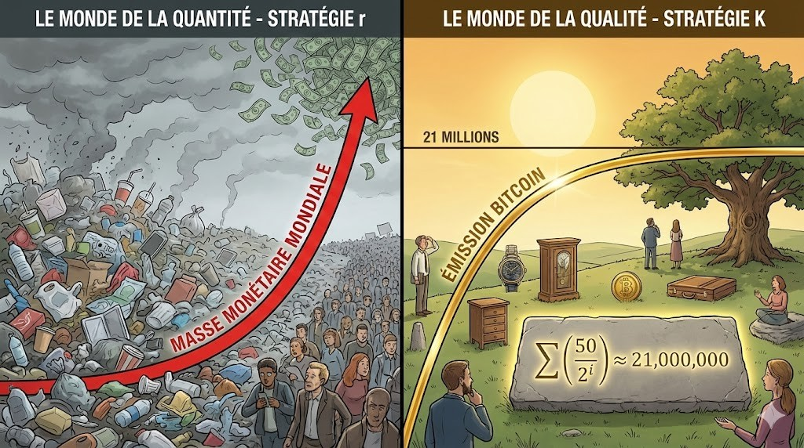
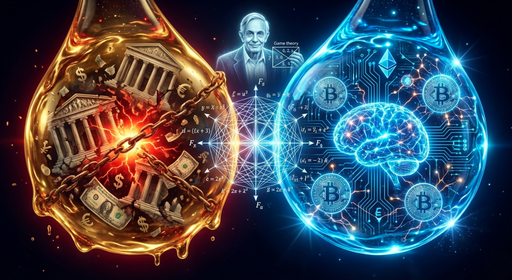
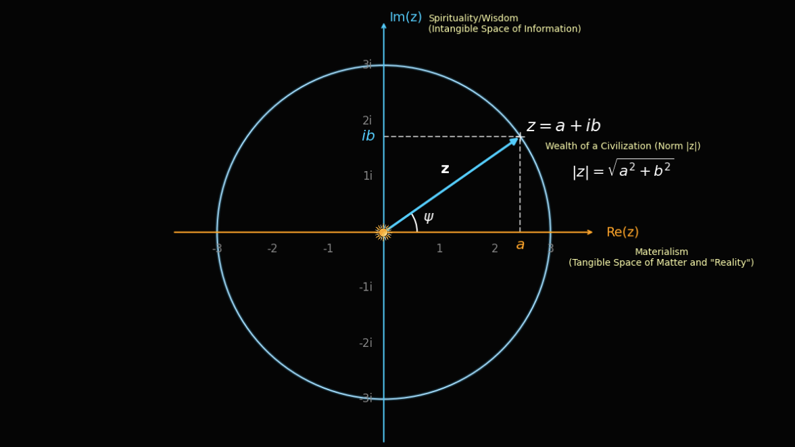
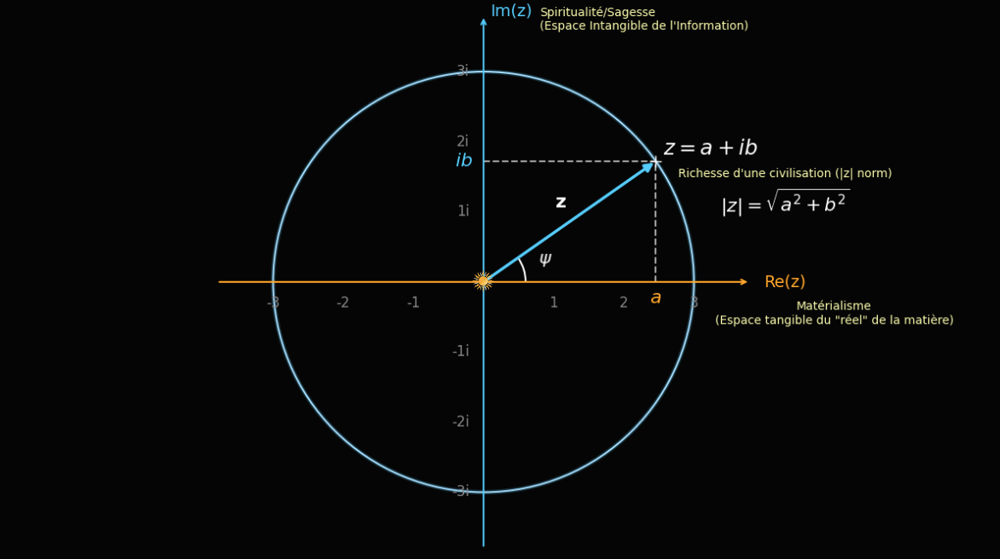
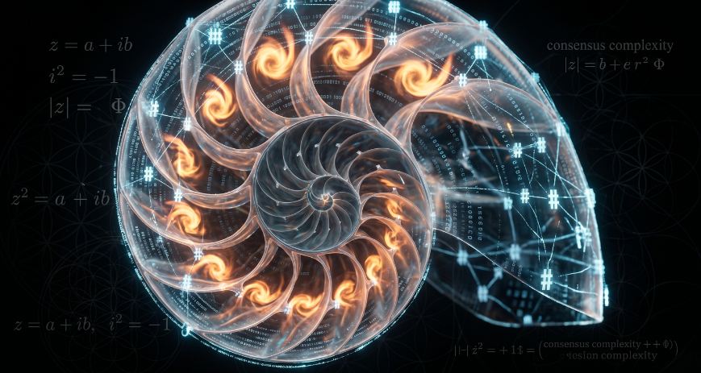
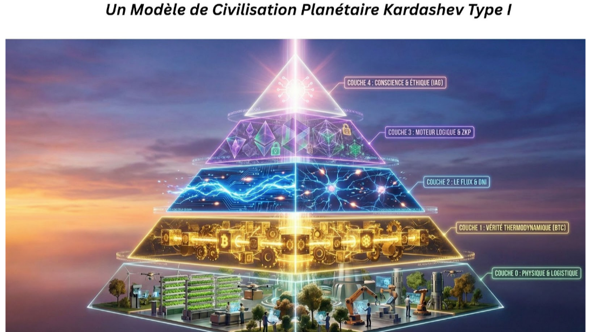

Back to Basics Retour aux Fondamentaux
Understanding Money & Bitcoin
(An accessible introduction before the technical analysis)
Comprendre la Monnaie et Bitcoin
(Une introduction accessible avant l’analyse technique)
Money is a technology that allows the transfer of value across space, time, and scale. Value is the utility humans derive from goods and services. It is highly subjective and varies across time and space. La monnaie est une technologie permettant de transférer de la valeur à travers l'espace, le temps et l'échelle. La valeur est l'utilité que les humains retirent des biens et des services. Elle est hautement subjective et varie selon le temps et l'espace.
In physical terms, holding money means holding a drawing right on our environment. Every time you spend, you issue a command line to society: extract resources, burn energy, and put humans/machines/biosphere to work for you. Concrètement, posséder de la monnaie équivaut à détenir un droit de tirage sur notre environnement. Chaque fois que vous dépensez, vous donnez un ordre à la société/exécutez une ligne de commande dans le code source de la réalité : extraire des ressources, brûler de l'énergie et faire travailler la biosphère, des humains ou des machines pour vous.
What is Money? The 3 Superpowers Qu'est-ce que la Monnaie ? Les 3 Superpouvoirs ou Fonctions
Perhaps unknowingly, economists defined these functions as follows: À leur insu, les économistes ont défini ces fonctions comme suit :
Think of it as a Battery for Time. If you work for 10 hours today, good money stores that energy so you can spend those 10 hours next year without them leaking away. Imaginez une Pile pour le Temps. Si vous travaillez 10 heures aujourd'hui, une bonne monnaie stocke cette énergie pour que vous puissiez dépenser ces 10 heures l'année prochaine sans qu'elles ne se vident.
Think of it as a Bridge. You bake bread, but you want shoes. Instead of finding a shoemaker who wants bread, you both use money to cross the bridge. Imaginez un Pont. Vous faites du pain, mais vous voulez des chaussures. Au lieu de chercher un cordonnier qui veut du pain, vous utilisez tous les deux l'argent pour traverser le pont.
Think of it as a Ruler. It measures the cost of everything. If the ruler shrinks or stretches (inflation), you can't measure anything properly anymore. Imaginez une Règle pour mesurer. Elle donne le prix de tout. Si la règle s'étire ou rétrécit (l'inflation), vous ne pouvez plus rien mesurer correctement.
Throughout history, no monetary system has managed to simultaneously fulfill the three functions of money completely. This is where the idea of backing money and the necessity to distinguish between money and currency comes from. This compromise can be described as a monetary trilemma: you can optimize two functions, but not all three: À travers l'histoire, aucun système monétaire n'est parvenu à remplir simultanément les trois fonctions de la monnaie. C'est de là que proviennent l'idée de garantir la monnaie et la nécessité de distinguer la monnaie et les devises. Ce compromis peut être décrit comme un trilemme monétaire : on peut optimiser deux fonctions, mais pas les trois :
- Gold has historically served as a durable store of value and a widely recognized reference, but it is costly to transport, verify, divide and settle directly over long distances. L’or a historiquement servi de réserve de valeur durable et de référence largement reconnue, mais il est coûteux à transporter, vérifier, diviser et régler directement sur de longues distances.
- Fiat currency is highly effective across space and scale, but its long-term purchasing power depends on monetary governance and is generally designed to decline gradually under positive inflation targets. La monnaie fiat est très efficace dans l’espace et à grande échelle, mais la préservation de son pouvoir d’achat dépend de sa gouvernance monétaire et celui-ci est généralement destiné à diminuer progressivement lorsque l’objectif d’inflation est positif.
- Local currencies are not complete money. They optimize local space, but sacrifice scale and time. Les monnaies locales ne sont pas des monnaies complètes. Elles optimisent l’espace local, mais sacrifient l’échelle et le temps.
The Fundamental Question Bitcoin Challenges La question fondamentale remise en cause par Bitcoin
Who is allowed to create new units of money, according to which rules, and who receives them first? Qui peut créer de nouvelles unités monétaires, selon quelles règles, et qui les reçoit en premier ?
Imagine that money is the ruler used to measure every price and the scoreboard used to record everyone’s economic efforts. If some participants can create new points or change the ruler, this changes the meaning of all the points that already exist. Imaginez que la monnaie soit à la fois la règle qui mesure tous les prix et le tableau des scores qui enregistre les efforts économiques de chacun. Si certains participants peuvent créer de nouveaux points ou modifier la règle, cela change la signification de tous les points qui existaient déjà.
In a modern fiat system, the number of monetary units is not fixed in advance. Money is elastic: its quantity can expand or contract according to bank lending, central-bank operations, government policies, interest rates, financial regulation and demand for credit. Dans un système monétaire fiat moderne, le nombre d’unités monétaires n’est pas fixé à l’avance. La monnaie est élastique : sa quantité peut augmenter ou diminuer selon le crédit bancaire, les opérations de la banque centrale, les politiques publiques, les taux d’intérêt, la réglementation financière et la demande de crédit.
Important: money creation is not the same as wealth creation. Creating more claims on goods and services does not automatically create more houses, food, energy, machines or human time. Important : créer de la monnaie ne signifie pas créer de la richesse. Créer davantage de droits de tirage sur les biens et les services ne crée pas automatiquement davantage de logements, de nourriture, d’énergie, de machines ou de temps humain.
The 6 Main Mechanisms of Money Creation Les 6 principaux mécanismes de création monétaire
Some mechanisms create commercial-bank money; others create central-bank money. Certains mécanismes créent de la monnaie bancaire ; d’autres créent de la monnaie de banque centrale.
When a bank grants a mortgage or a business loan, it generally credits the borrower’s account with a new deposit. A new debt and new deposit appear at the same time.
Loan granted → new bank deposit. Lorsqu’une banque accorde un crédit immobilier ou un prêt à une entreprise, elle inscrit généralement un nouveau dépôt sur le compte de l’emprunteur. Une nouvelle dette et un nouveau dépôt apparaissent simultanément.
Crédit accordé → nouveau dépôt bancaire.
A bank can also create a deposit when it purchases a bond, property, security or another asset from a non-bank and credits the seller’s account.
Asset purchased → new bank deposit. Une banque peut également créer un dépôt lorsqu’elle achète une obligation, un bien immobilier, un titre ou un autre actif à un acteur non bancaire, puis crédite le compte du vendeur.
Actif acheté → nouveau dépôt bancaire.
The central bank can lend to commercial banks against eligible collateral. It creates new central-bank reserves by crediting their reserve accounts.
Refinancing operation → new reserves. La banque centrale peut prêter aux banques commerciales contre des garanties éligibles. Elle crée de nouvelles réserves en créditant leurs comptes auprès de la banque centrale.
Opération de refinancement → nouvelles réserves.
Through open-market operations or quantitative easing, the central bank purchases bonds or other assets and pays by creating new reserves. If the seller is a non-bank, the operation can also create a new bank deposit.
Central-bank purchase → new reserves and, in some cases, new deposits. Par ses opérations de marché ou l’assouplissement quantitatif, la banque centrale achète des obligations ou d’autres actifs et paie en créant de nouvelles réserves. Si le vendeur est un acteur non bancaire, l’opération peut également créer un nouveau dépôt bancaire.
Achat par la banque centrale → nouvelles réserves et, dans certains cas, nouveaux dépôts.
When government expenditure exceeds the money withdrawn through taxes, the deficit is financed by issuing debt. Government payments increase private bank deposits, while the final monetary effect depends on who purchases the debt and on the central bank’s operations.
Deficit spending + monetary accommodation → potential net monetary expansion. Lorsque les dépenses publiques dépassent les sommes retirées par les impôts, le déficit est financé par l’émission de dette. Les paiements publics augmentent les dépôts bancaires privés, mais l’effet monétaire final dépend de l’acheteur de la dette et des opérations de la banque centrale.
Déficit public + accompagnement monétaire → expansion monétaire nette potentielle.
Central banks issue banknotes, while coins are generally issued by governments or national monetary authorities. When cash is put into circulation, physical central-bank money replaces reserves or other monetary claims. Net issuance increases the quantity of physical currency held by the public, although it does not necessarily increase the broader money supply.
Cash issued → more physical currency in circulation. Les banques centrales émettent les billets, tandis que les pièces sont généralement émises par les États ou les autorités monétaires nationales. Lorsque les espèces sont mises en circulation, elles remplacent des réserves ou d’autres créances monétaires. Leur émission nette augmente la quantité de monnaie physique détenue par le public, sans nécessairement accroître la masse monétaire au sens large.
Espèces émises → davantage de monnaie physique en circulation.
When the principal of a bank loan is repaid, the corresponding deposit money is extinguished. Similarly, central-bank reserves can disappear when loans to banks are repaid or when the central bank sells assets. Lorsque le principal d’un crédit bancaire est remboursé, la monnaie bancaire correspondante est détruite. De même, des réserves de banque centrale peuvent disparaître lorsque les banques remboursent leurs emprunts ou lorsque la banque centrale revend des actifs.
If price stability is the objective, why is 2% inflation considered stable, while 0% is considered dangerous? And why does the supermarket bill so often seem to rise much faster than 2% per year? 🤔 Si la stabilité des prix est l’objectif, pourquoi une inflation de 2 % est-elle considérée comme stable, tandis que 0 % est considéré comme dangereux ? Et pourquoi le montant payé à la caisse du supermarché semble-t-il si souvent augmenter bien plus vite que 2 % par an ? 🤔
Between 2015 and 2024, food and non-alcoholic beverage prices increased by 42.8% in the European Union—the largest increase among the main categories of the consumer price index.1 Entre 2015 et 2024, les prix des produits alimentaires et des boissons non alcoolisées ont augmenté de 42,8 % dans l’Union européenne, soit la plus forte hausse parmi les grandes catégories de l’indice des prix à la consommation.1
Note: 42.8% is a cumulative increase over nine years, not an annual rate. The 2% target applies to the overall average price level over the medium term—not to every product, household or year. The HICP is designed to measure price stability and is not a household-specific cost-of-living index. Note : 42,8 % représente une hausse cumulée sur neuf ans, et non un taux annuel. La cible de 2 % concerne l’évolution moyenne de l’ensemble des prix à moyen terme, et non chaque produit, chaque ménage ou chaque année. L’IPCH mesure la stabilité générale des prix et ne constitue pas un indice personnalisé du coût de la vie.
What Does Bitcoin Change? Que change Bitcoin ?
Bitcoin does not merely propose a new payment method. It proposes a different rule for issuing monetary units: a public, predictable and verifiable issuance schedule enforced by the network rather than decided by a bank, government or central committee. Bitcoin ne propose pas seulement un nouveau moyen de paiement. Il propose une autre règle d’émission des unités monétaires : un calendrier public, prévisible et vérifiable, appliqué par le réseau plutôt que décidé par une banque, un gouvernement ou un comité central.
- Predetermined supply: issuance follows rules written into the protocol. Offre prédéterminée : l’émission suit des règles inscrites dans le protocole.
- Maximum quantity: no more than 21 million bitcoin can be issued under the current consensus rules. Quantité maximale : pas plus de 21 millions de bitcoins ne peuvent être émis selon les règles de consensus actuelles.
- Predictable rhythm: the issuance rate is periodically reduced through the halving mechanism. Rythme prévisible : le taux d’émission est périodiquement réduit par le mécanisme du halving.
- Public verification: anyone can verify the supply and reject units that violate the rules. Vérification publique : chacun peut vérifier l’offre monétaire et rejeter les unités qui ne respectent pas les règles.
- No discretionary issuer: no institution can independently decide to create additional bitcoin. Absence d’émetteur discrétionnaire : aucune institution ne peut décider seule de créer des bitcoins supplémentaires.
Bitcoin therefore challenges not only the quantity of money, but the governance of money: who controls the ruler, who can modify it, and under which rules? Bitcoin remet donc en question non seulement la quantité de monnaie, mais sa gouvernance : qui contrôle la règle, qui peut la modifier et selon quelles règles ?
To fully appreciate the theoretical depth of this document, a minimum understanding of how a blockchain operates is required. For our French-speaking audience, we highly recommend watching these two excellent introductory videos before proceeding.
Pour apprécier pleinement la profondeur théorique de ce document, une connaissance minimale du fonctionnement d'une blockchain est nécessaire. Si vous découvrez totalement cet univers, nous vous recommandons vivement de visionner ces deux excellentes vidéos introductives avant de poursuivre votre lecture.
Defining Bitcoin: Scarcity & Saleability Définir Bitcoin : Rareté & Vendabilité
Economist Saifedean Ammous considers Bitcoin the most advanced form of money ever invented due to its fundamental properties: L'économiste Saifedean Ammous considère Bitcoin comme la forme de monnaie la plus avancée jamais inventée en raison de propriétés essentielles :
- Absolute Scarcity: Bitcoin is inflation-resistant with a fixed supply of 21 million. While fiat currencies have a "leak" (♾️/21M), Bitcoin's new supply asymptotically approaches zero. La rareté absolue : Bitcoin est résistant à l'inflation avec une offre limitée à 21 millions. Alors que les monnaies fiduciaires ont une "fuite" (♾️/21M), l'émission de Bitcoin tend vers zéro.
- No Central Authority: The network operates without needing to trust a central entity. No administrators can control, modify, or censor its use. L'absence d'autorité centrale : Le réseau fonctionne sans avoir besoin de faire confiance à une entité. Il n'y a pas d'administrateurs qui peuvent contrôler, modifier ou censurer son utilisation.
Ammous defines "saleability" as the capacity of a good to be easily sold on the market without losing significant value. Bitcoin uniquely combines the saleability of gold across time (resistance to inflation) with the saleability of fiat across space (fast, borderless final settlement). Ammous définit la "vendabilité" comme la capacité d'un bien à être vendu facilement sur le marché sans perte de valeur significative. Bitcoin combine la "vendabilité" de l'or dans le temps (résistance à l'inflation) avec la "vendabilité" de la monnaie fiduciaire dans l'espace (règlement final rapide et sans frontières).
John Nash & Asymptotically Ideal Money John Nash & La Monnaie Asymptotiquement Idéale

It is striking to note how closely Bitcoin approaches the vision of Nobel laureate John F. Nash Jr. In works like his 2002 paper in the Southern Economic Journal, Nash developed the theoretical framework for "Ideal Money" — a globally stable currency free from the Triffin dilemma and domestic political inflation. Il est frappant de noter à quel point Bitcoin se rapproche de la vision du lauréat du prix Nobel John F. Nash Jr. Dans des travaux comme son article de 2002 dans le Southern Economic Journal, Nash a développé le cadre théorique de la « Monnaie Idéale » — une monnaie mondialement stable, exempte du dilemme de Triffin et de l'inflation politique intérieure.
He argued that money should function like a physical unit of measure — immutable, objective, independent of political will, and intrinsically free of "inflationary decadence." The supply should asymptotically (gradually) approach a constant value. Il soutenait que la monnaie devait fonctionner comme une unité de mesure physique — immuable, objective, indépendante de la volonté politique, et intrinsèquement libre de « décadence inflationniste ». L'offre devait approcher asymptotiquement (progressivement) une valeur constante.
"Just as scientific communities rely on immutable definitions of the metre, kilogram, and second, the global economy needs an immutable measure of value to optimise long-term cooperative games across borders and generations." "Tout comme les communautés scientifiques s'appuient sur des définitions immuables du mètre, du kilogramme et de la seconde, l'économie mondiale a besoin d'une mesure immuable de la valeur pour optimiser les jeux coopératifs à long terme à travers les frontières et les générations."
In early 2015, John Nash explained at the Oxford Union Society how Bitcoin coins cannot be counterfeited, unlike gold, making it perhaps the most "honest" money ever utilized by humanity. Début 2015, John Nash expliquait à l'Oxford Union Society comment les « pièces » de Bitcoin ne peuvent pas être contrefaites, contrairement à l’or, en faisant potentiellement la monnaie la plus « honnête » jamais inventée.
How is Bitcoin made? Workers & Inspectors Comment est fabriqué Bitcoin ? Les Ouvriers et les Inspecteurs
The Bitcoin network is a giant digital cooperative made of two groups: Le réseau Bitcoin est une immense coopérative numérique composée de deux groupes :
⛏️ The Miners (The Workers)⛏️ Les Mineurs (Les Ouvriers)
Miners are giant computers that act as security guards. They spend real physical energy (electricity) to solve very difficult math puzzles. This is what is called the Proof-of-Work mechanism in the Protocol. When they solve one, they lock a "block" of new transactions into the chain forever. Because rewriting confirmed history requires reproducing the accumulated Proof-of-Work and overtaking the competing chain, such an attack becomes increasingly difficult, costly and economically uncertain as confirmations accumulate. For their hard work, the protocol pays them in new Bitcoins. This is the ONLY way new Bitcoins are created. Les mineurs sont de puissants ordinateurs. Ils dépensent de l'énergie physique (de l'électricité) pour résoudre un puzzle mathématique complexe. On appelle cette dépense : la Preuve de Travail. Quand ils réussissent, ils verrouillent un "bloc" de transactions pour toujours. Pour réécrire un historique confirmé, un attaquant devrait reproduire la preuve de travail accumulée et dépasser la chaîne concurrente. Une telle attaque devient donc de plus en plus difficile, coûteuse et économiquement incertaine à mesure que les confirmations s’accumulent. Lorsqu’il produit un bloc valide, le mineur peut recevoir une récompense composée de nouveaux bitcoins — la subvention de bloc — et des frais versés par les utilisateurs. La subvention de bloc est le seul mécanisme prévu par le protocole par lequel de nouvelles unités de bitcoin entrent en circulation.
👁️ The Nodes (The Inspectors)👁️ Les Nœuds (Les Inspecteurs)
Nodes are regular computers (like your old laptop) run by everyday people. They don't use much electricity. Their job is to hold the rulebook and check the Miners' work. If a Miner tries to cheat or create too many Bitcoins, the Nodes instantly reject their block. The Miners have the physical power, but the Nodes (the people) have the absolute authority. Together, they enforce the ultimate rule: there will never be more than 21 million Bitcoins. Les nœuds sont des ordinateurs normaux (comme votre vieux PC) gérés par n'importe qui. Ils ne consomment presque pas d'électricité. Leur rôle est de vérifier le travail des Mineurs. Si un Mineur essaie de tricher ou de créer trop de Bitcoins, les Nœuds rejettent son travail. Les Mineurs ont la force brute, mais les Nœuds (le peuple) détiennent l'autorité absolue. Ensemble, ils garantissent la règle d'or : il n'y aura jamais plus de 21 millions de Bitcoins.
The Flame of Liberty La Flamme de la Liberté
The M.I.T, the world's leading technological university (where a certain John Nash taught), is also one of the first to dedicate an annual expo to Bitcoin. Le M.I.T, la meilleure université technologique au monde (où un certain John Nash a enseigné) est aussi une des premières qui dédie une expo chaque année au Bitcoin.

❓ Reflection: ❓ Réflexion: By using the flame of the Statue of Liberty's torch 🗽 as a symbol, the M.I.T seems to issue an invitation for the free world to reunite. So that the flame of liberty — too often taken for granted — may never be extinguished. En utilisant la flamme de la torche de la statue de la Liberté 🗽 comme symbole, le M.I.T semble lancer une invitation au monde libre à se retrouver. Pour que la flamme de la liberté — trop souvent prise pour acquise — ne s’éteigne jamais.
The Empirical Proof La Preuve Empirique
Validating Nash's Theory
Through the Emergy Framework
Valider la théorie de Nash
via le Cadre de l'Émergie
Our work builds upon John Nash's vision, particularly in examining how the proof-of-work mechanism of the asymptotic currency Bitcoin is precisely the required anchor for an Ideal Money: a thermodynamic proof linked to each satoshi by a measurable quantity of solar work embedded in the biosphere. Nos travaux s'inscrivent dans la continuité de la vision de John Nash pour notamment étudier comment le mécanisme de preuve de travail de la monnaie asymptotique Bitcoin est précisément l'ancrage requis pour une Monnaie Idéale : une preuve thermodynamique liant chaque satoshi à une quantité mesurable de travail solaire intégrée dans la biosphère.
Biophysical Anchor Ancrage Biophysique
Unlike fiat currencies whose supply is politically discretionary, the security of each Satoshi is guaranteed by a massive expenditure of solar emergy — a physically grounded, non-manipulable cost. The Nakamoto Protocol allows, for the first time, to transfer the irrefutable proof of this energetic effort at the speed of information. Contrairement aux monnaies fiduciaires dont l'offre est arbitraire, la sécurité d'un Satoshi est garantie par une dépense d'émergie solaire — un coût ancré physiquement et non manipulable. Le protocole de Nakamoto permet d'envoyer, pour la première fois, la preuve mathématique de cet effort thermodynamique à la vitesse de l'information.
Emergy Framework Cadre de l'Émergie
Building on H.T. Odum's systems ecology, the Emergy Framework converts all energy flows into Solar Emjoules (sej), enabling cross-domain comparison of thermodynamic work. S'appuyant sur l'écologie des systèmes de H.T. Odum, le cadre de l'Émergie convertit tous les flux énergétiques en Emjoules Solaires (sej), permettant une comparaison croisée du travail thermodynamique.
Nash ICI Hypothesis Hypothèse de l'ICI de Nash
Network Difficulty acts as a decentralised proxy for Nash's Industrial Consumption Index (ICI), validated empirically through Spearman correlation (\(\rho \approx 0.97\)) and cointegration testing. As ASICs reach their physical limits (Landauer's principle), this metric will shift from an index of technological innovation to a pure global thermometer of baseload energy costs. La Difficulté du réseau agit comme un proxy décentralisé pour l'Indice de Consommation Industrielle (ICI) de Nash, validé empiriquement par la corrélation de Spearman (\(\rho \approx 0.97\)) et les tests de cointégration. À mesure que les puces (ASICs) atteindront leurs limites physiques (principe de Landauer), cette métrique basculera d'un indice d'innovation technologique vers un pur thermomètre global du coût de l'énergie de base (baseload).
Nakamoto Action Action de Nakamoto
The microscopic Nakamoto Action (\(\kappa_N = \eta \times \tau_{local}\)) converges toward Planck's constant \(h \approx 6.626 \times 10^{-34} \text{ J}\cdot\text{s}\) as ASIC efficiency approaches its physical limits. L'Action de Nakamoto microscopique (\(\kappa_N = \eta \times \tau_{local}\)) converge vers la constante de Planck \(h \approx 6.626 \times 10^{-34} \text{ J}\cdot\text{s}\) à mesure que l'efficacité des ASIC approche ses limites physiques.
Cryptographic Hash Hachage Cryptographique
A cryptographic hash is not just computation — it is a discrete unit of thermodynamic effort. While dimensionless in theory, its physical realization in mining hardware gives each hash a measurable energy cost (J) and an associated action (J·s). This links digital consensus to the laws of physics, allowing network difficulty to reflect accumulated thermodynamic work. Un hachage cryptographique n’est pas seulement un calcul — c’est une unité discrète d’effort thermodynamique. Bien que sans dimension en théorie, sa réalisation physique dans le matériel de minage lui confère un coût énergétique mesurable (J) et une action associée (J·s). Cela relie le consensus numérique aux lois de la physique, permettant à la difficulté du réseau de refléter le travail thermodynamique accumulé.
From CPI to ICI: Applying Nash's Vision to Modern Central Banking De l'IPC à l'ICI : Appliquer la vision de John Nash aux Banques Centrales Modernes
In his later works on Ideal Money, John Nash argued that central banks' reliance on the Consumer Price Index (CPI) is fundamentally flawed. Because the CPI is subjective, locally defined, and vulnerable to political manipulation (such as hedonic quality adjustments), it cannot serve as a reliable anchor. Instead, Nash proposed that monetary policy should be guided by an Industrial Consumption Index (ICI)—a basket of globally traded, physical commodities whose prices reflect objective thermodynamic realities. Dans ses derniers travaux sur la Monnaie Idéale, John Nash affirmait que la dépendance des banques centrales à l'Indice des Prix à la Consommation (IPC) est une erreur fondamentale. L'IPC étant intrinsèquement subjectif, local et vulnérable aux manipulations politiques (notamment via les ajustements hédoniques), il ne peut servir d'ancrage fiable. Nash proposait plutôt de guider la politique monétaire par un Indice de Consommation Industrielle (ICI) — un panier de matières premières physiques échangées mondialement, reflétant des réalités thermodynamiques objectives.
Historically, central banks operate under a dual mandate: ensuring price stability (via the CPI) and maximizing employment. However, we are entering a paradigm where Artificial Intelligence and automation render human labor increasingly optional. If human employment ceases to be the primary engine of production, this dual mandate loses its structural coherence. The CPI will be crushed by technological deflation, while employment metrics will no longer reflect economic health. Global governance must therefore evolve and find a new anchor: one based not on the cost of human labor, but on the absolute cost of energy and computation. Historiquement, les banques centrales opèrent sous un double mandat : garantir la stabilité des prix (via l'IPC) et maximiser l'emploi. Cependant, nous entrons dans un paradigme où l'Intelligence Artificielle et l'automatisation vont rendre le labeur humain de plus en plus optionnel. Si l'emploi humain cesse d'être le moteur principal de la production, ce double mandat perd sa cohérence structurelle. L'IPC sera écrasé par la déflation technologique, tandis que l'emploi ne reflétera plus la santé économique. La gouvernance mondiale doit donc évoluer et trouver un nouvel ancrage : non plus basé sur le coût du travail humain, mais sur le coût de l'énergie et du calcul.
Our empirical results offer a direct, practical application of this vision. Prominent financial voices like Kevin Warsh and Scott Bessent have fiercely criticized central banks for "flying blind"—steering global economies using backward-looking, heavily revised, and lagging indicators. By demonstrating that Bitcoin's Network Difficulty reliably proxies this ICI, we provide a mathematically verifiable, real-time macroeconomic dashboard.
Specifically, central banks should look at the first derivative of the Difficulty (\( \frac{dD}{dt} \)). While absolute difficulty measures the accumulated thermodynamic "stock" of the network, its first derivative measures the "flow"—the real-time velocity of global industrial expansion or contraction. This acts as an instantaneous seismograph of global energy appetite, offering three concrete application cases to guide monetary policy:
Nos résultats empiriques offrent une application pratique et directe de cette vision. Des voix financières influentes (à l'image de Kevin Warsh ou Scott Bessent) critiquent vivement les banques centrales qui pilotent l'économie mondiale "en regardant dans le rétroviseur", en s'appuyant sur des indicateurs décalés, révisés et tournés vers le passé. En démontrant que la Difficulté du réseau Bitcoin agit comme un proxy très précis de cet ICI, nous fournissons un tableau de bord macroéconomique en temps réel et mathématiquement infalsifiable.
Plus spécifiquement, la métrique clé est la dérivée première de la Difficulté (\( \frac{dD}{dt} \)). Si la difficulté absolue mesure le "stock" thermodynamique accumulé, sa dérivée première mesure le "flux" : la vitesse d'expansion ou de contraction de l'industrie mondiale. Elle agit comme un sismographe instantané de l'appétit énergétique planétaire, offrant trois cas d'application concrets pour guider la politique monétaire :
- 1. Positive Derivative (\( \frac{dD}{dt} > 0 \)) — Industrial Expansion: Capital is flowing into physical infrastructure; global energy is abundant and cheap. This is a signal of real economic acceleration. The central bank can maintain neutrality or reduce liquidity injections, knowing the biosphere is in an optimal exploitation phase. 1. Dérivée Positive (\( \frac{dD}{dt} > 0 \)) — L'Expansion Industrielle : Le capital afflue vers l'infrastructure physique ; l'énergie mondiale est abondante et bon marché. C'est un signal d'accélération économique réelle. La banque centrale peut réduire ses injections de liquidités, sachant que la biosphère est en phase d'exploitation optimale.
- 2. Stagnation (\( \frac{dD}{dt} \approx 0 \)) — Thermodynamic Equilibrium: The network is no longer growing. The semiconductor industry has reached a temporary physical limit, or marginal energy is no longer profitable. The system is under thermodynamic constraint. This signals the State to redirect structural investments toward fundamental research or new base-load energy sources, rather than artificially stimulating consumption. 2. Stagnation (\( \frac{dD}{dt} \approx 0 \)) — L'Équilibre Thermodynamique : Le réseau ne croît plus. L'industrie a atteint une limite physique temporaire, ou l'énergie marginale n'est plus rentable. Le système est sous contrainte. C'est un signal pour que l'État réoriente ses investissements vers la recherche fondamentale ou de nouvelles sources d'énergie de base, plutôt que de stimuler artificiellement la consommation.
- 3. Negative Derivative (\( \frac{dD}{dt} < 0 \)) — Contraction & Physical Stress: Miners capitulate and unplug their machines. This indicates a severe exogenous shock: energy has become too expensive, industrial supply chains are broken, or a geopolitical conflict has erupted. Unlike the CPI, which takes months to adjust, the negative derivative is an absolute and immediate alarm signal of physical stress, providing an objective justification for emergency intervention. 3. Dérivée Négative (\( \frac{dD}{dt} < 0 \)) — La Contraction et le Stress Physique : Les mineurs capitulent et débranchent leurs machines. Cela indique un choc exogène grave : l'énergie est devenue trop coûteuse, les chaînes d'approvisionnement industrielles sont brisées, ou un conflit a éclaté. Contrairement à l'IPC qui met des mois à s'ajuster, la dérivée négative est un signal d'alarme absolu et immédiat de stress physique, justifiant objectivement une intervention d'urgence.
Validation Empirique : La Révélation de l'Inertie Logistique (Le Mur des 18 Mois)
Pour dépasser la simple observation visuelle, nous avons soumis ces données à un algorithme de corrélation croisée décalée dans le temps (Time-Lagged Cross-Correlation). Le but : mesurer le temps exact qu'il faut pour qu'une décision monétaire abstraite (la modification des taux par la banque centrale) se matérialise dans l'industrie lourde physique (l'évolution de la difficulté de minage).
Le résultat est sans appel : la corrélation inverse la plus forte (\(\rho = -0.375\)) est atteinte avec un décalage temporel de 18 mois. Ce chiffre n'est pas une anomalie statistique ; c'est la quantification mathématique de la friction thermodynamique du monde réel.
- L'illusion de l'instantanéité monétaire : Lorsqu'une banque centrale baisse ses taux pour stimuler l'économie, les marchés financiers réagissent en quelques millisecondes. Mais dans le monde physique, il faut 18 mois pour lever des fonds, commander des puces ASIC (soumises aux goulots d'étranglement des fonderies comme TSMC), construire des centres de données sécurisés, et négocier des contrats d'approvisionnement énergétique massifs.
- L'effet d'inertie (Le piège) : À l'inverse, lorsque les taux montent violemment (comme en 2022), la difficulté continue d'augmenter pendant plus d'un an. Pourquoi ? Parce que les infrastructures commandées 18 mois plus tôt, lorsque l'argent était encore gratuit, continuent d'être livrées et branchées. Les mineurs, piégés par leurs coûts irrécupérables (sunk costs), minent à perte jusqu'à la capitulation finale.
Cette découverte renforce l'intuition de John Nash : piloter l'économie mondiale en se fixant exclusivement sur l'Indice des Prix à la Consommation (IPC) relève d'une dangereuse myopie, cet indicateur étant par nature réactif, décalé et politiquement malléable. À l'inverse, l'analyse de la dérivée de la difficulté du réseau Bitcoin offre un sismographe macroéconomique ancré dans le réel. Elle rappelle avec humilité aux planificateurs centraux qu'aucune création monétaire ne peut s'affranchir des lois de la physique : l'expansion industrielle exigera toujours du temps, du silicium et de l'énergie. L'Étalon Solaire ne fait que nous ramener, avec une rigueur mathématique, à la réalité incontournable de la matière.
Empirical Validation: The Revelation of Logistical Inertia (The 18-Month Wall)
To go beyond mere visual observation, we subjected this data to a Time-Lagged Cross-Correlation algorithm. The goal: to measure the exact time it takes for an abstract monetary decision (central bank interest rate adjustments) to materialize in physical heavy industry (the evolution of mining difficulty).
The result is definitive: the strongest inverse correlation (\(\rho = -0.375\)) is reached with a time lag of exactly 18 months. This number is not a statistical anomaly; it is the mathematical quantification of the thermodynamic friction of the real world.
- The Illusion of Monetary Instantaneity: When a central bank lowers rates to stimulate the economy, financial markets react in milliseconds. But in the physical world, it takes 18 months to raise capital, order ASIC chips (subject to foundry bottlenecks like TSMC), build secure data centers, and negotiate massive base-load energy supply contracts.
- The Inertia Effect (The Trap): Conversely, when rates hike violently (as in 2022), network difficulty continues to rise for over a year. Why? Because infrastructure ordered 18 months earlier, when money was still free, continues to be delivered and plugged in. Miners, trapped by their sunk costs, mine at a loss until final capitulation.
This discovery reinforces John Nash's intuition: steering the global economy by relying exclusively on the Consumer Price Index (CPI) is a dangerously myopic approach, as the indicator is inherently reactive, lagging, and politically malleable. Conversely, analyzing the derivative of Bitcoin's network difficulty provides a macroeconomic seismograph grounded in physical reality. It serves as a humble reminder to central planners that no amount of monetary creation can bypass the laws of physics: industrial expansion will always require time, silicon, and energy. The Solar Standard simply anchors us, with mathematical rigor, back to the inescapable reality of matter.
We must remain profoundly humble in the face of this paradigm shift. Replacing a century-old indicator like the CPI with an Industrial Consumption Index pegged to Bitcoin's Proof-of-Work constitutes a massive conceptual upheaval. This approach still requires extensive cross-disciplinary research to precisely model how this metric transition could be integrated, in practice, into the complex and rigid tools of global macroeconomic governance. Il convient toutefois de rester particulièrement humble face à ce changement de paradigme. Remplacer un indicateur séculaire comme l'IPC par un Indice de Consommation Industrielle adossé à la preuve de travail de Bitcoin constitue un bouleversement conceptuel majeur. Cette approche nécessite encore des recherches pluridisciplinaires approfondies pour modéliser précisément comment cette transition métrique pourrait s'intégrer, en pratique, aux outils complexes et rigides de la gouvernance macroéconomique mondiale.
Live Multi-Objective Optimisation : Nash's ICI Optimisation Multi-Objectifs en direct : L'ICI de Nash
The browser is currently fetching macroeconomic data via a proxy, executing a strict rank-based optimization algorithm (forcing a minimum 5% weight per asset) to maximize the Spearman correlation between the industrial basket and Bitcoin's Network Difficulty. Le navigateur télécharge les données macroéconomiques via un proxy, puis exécute un algorithme d'optimisation strict (imposant un poids minimum de 5% par actif) pour maximiser la corrélation de Spearman entre le panier industriel et la Difficulté du Réseau Bitcoin.
Analysis: The Apex Solar Standard & Condensed Emergy Analyse : L'Étalon Solaire Apex et l'Émergie Condensée
What does this live optimization reveal? By enforcing a strict minimum of 5% for each asset to simulate a true diversified basket, the algorithm consistently achieves an exceptional Spearman correlation of ~0.979. However, it overwhelmingly allocates 85% of the weight to the semiconductor industry (TSM), relegating raw energy and copper to their minimum threshold. Que révèle cette optimisation en direct ? En imposant un seuil minimum strict de 5% pour chaque actif afin de forcer un véritable panier diversifié, l'algorithme atteint systématiquement une corrélation de Spearman exceptionnelle de ~0.979. Cependant, il alloue massivement 85% du poids à l'industrie des semi-conducteurs (TSM), reléguant l'énergie brute et le cuivre à leur seuil minimum.
Why does the algorithm heavily favor silicon over raw energy? This does not contradict Bitcoin’s nature as a Solar Standard; rather, it confirms it at the very apex of H.T. Odum's thermodynamic hierarchy. In the Emergy framework, transformity (sej/J) measures the cumulative direct and indirect solar work required to generate a product. An ASIC chip manufactured by TSMC is not just "sand"; it exhibits one of the highest transformities in the biosphere. It embodies millions of gigajoules of solar emergy condensed into refined quartz, ultra-pure water, rare metals, and a global industrial supply chain. Pourquoi l'algorithme favorise-t-il si massivement le silicium face à l'énergie brute ? Cela ne contredit pas la nature de Bitcoin comme Étalon Solaire ; au contraire, cela la confirme au sommet de la hiérarchie thermodynamique d'H.T. Odum. Dans le cadre de l'émergie, la transformité (sej/J) mesure la quantité de travail solaire cumulé nécessaire pour générer un produit. Une puce ASIC produite par TSMC n'est pas "juste du sable" ; elle représente l'un des objets à la plus haute transformité de la biosphère, incorporant des millions de gigajoules d'émergie solaire sous forme de quartz raffiné, d'eau ultra-pure, de métaux rares et d'une chaîne logistique mondiale.
Thus, Bitcoin operates as an "Apex Solar Standard". It tracks John Nash's Industrial Consumption Index (ICI), but updated for the Information Age: it measures humanity's ultimate capacity to concentrate raw solar emergy into computational action. As ASIC efficiency eventually plateaus against Landauer's physical limit, this metric will naturally transition from tracking technological innovation (Silicon) to tracking the pure global cost of baseload energy. Ainsi, Bitcoin opère comme un "Étalon Solaire Apex". Il traque fidèlement l'Indice de Consommation Industrielle (ICI) de John Nash, mais mis à jour pour l'ère de l'information : il mesure la capacité ultime de l'humanité à concentrer l'émergie solaire brute en action computationnelle. Lorsque l'efficacité des puces ASIC finira par plafonner face à la limite physique de Landauer, cette métrique basculera naturellement du suivi de l'innovation technologique (le silicium) vers le suivi pur du coût mondial de l'énergie de base.
The Great Illusion La Grande Illusion
You cannot print a barrel of oil.
Why use infinite money to measure a finite world?
Vous ne pouvez pas imprimer un baril de pétrole.
Pourquoi mesurer un monde fini avec une monnaie infinie ?
Once you see the flaw in the foundation of our civilization, you can never unsee it. We are trying to coordinate a world of finite physical resources using monetary ledgers whose units can expand without a predetermined maximum. Une fois que vous voyez la faille dans les fondations de notre civilisation, vous ne pouvez plus l'oublier. Nous tentons de coordonner un monde de ressources physiques limitées à l’aide de registres monétaires dont le nombre d’unités peut augmenter sans plafond prédéterminé.
The Fiat System: A Critical Hypothesis L'Anomalie Fiduciaire
Money is debt. To prevent the debt from collapsing, the system demands infinite exponential GDP growth. To achieve this growth, we must relentlessly extract physical resources, liquidating the Earth's natural capital (forests, oceans, minerals) to sustain a mathematical illusion. Inflation is not just economic; it is the thermodynamic liquidation of the biosphere. La monnaie est une dette. Pour ne pas s'effondrer, le système exige une croissance exponentielle infinie du PIB. Pour générer cette croissance, nous devons extraire sans relâche, liquidant le capital naturel de la Terre (forêts, océans, sols) pour maintenir une illusion mathématique. L'inflation n'est pas qu'économique ; c'est la liquidation thermodynamique de la biosphère.
Thermodynamic work remains the absolute property of the entity that provided it: this is the genesis of sovereignty over one's own energy. Le travail thermodynamique reste la propriété absolue de l'entité qui l'a fourni : c'est la genèse de la souveraineté sur sa propre énergie.
Live Network Data Données Réseau en Direct
Objective Thermodynamic Cost
(nChainWork)
Coût Thermodynamique Objectif
(nChainWork)
"Energy is the source and control of all things, all value, and all the actions of human beings and nature." « L'énergie est la source et le contrôle de toutes choses, de toute valeur, et de toutes les actions des êtres humains et de la nature. »
One of the greatest problems in our society is how we measure value creation. While the human utility of a service is subjective, the ledger used to exchange that value must be anchored to the physical world. L'un des grands problèmes de notre société est la façon dont nous mesurons la création de valeur. Si l'utilité humaine d'un bien est purement subjective, le registre utilisé pour échanger cette valeur doit, lui, être ancré dans le monde physique.
Why must the ledger be physical? Pourquoi le registre doit-il être physique ?
Imagine playing a game where everyone has to sweat to score points, except for one central player who can change the score with a remote control. That is fiat currency. The marginal technical cost of creating a very large quantity of central-bank money electronically can be extremely low compared with the real resources that this money may command., yet those digital digits can buy real things that require immense thermodynamic effort (food, houses, oil). This violates the first law of thermodynamics in the economic sphere. If money can be created for free, it acts as a black hole, siphoning the actual energy of those who work. For a system to be fair and mathematically sound, the ledger must obey the same physical laws as the world it measures. If it costs energy to extract a resource, it must cost an unforgeable amount of energy to create the unit of account that buys it. Imaginez jouer à un jeu où tout le monde doit transpirer pour marquer des points, sauf un joueur central qui peut modifier le score avec une télécommande. C'est le principe de la monnaie fiduciaire. Le coût technique marginal de création électronique d’une très grande quantité de monnaie de banque centrale peut être extrêmement faible par rapport aux ressources réelles que cette monnaie permet potentiellement de mobiliser. Pourtant, ces chiffres abstraits permettent d'acheter des choses réelles qui exigent un immense effort thermodynamique (maisons, pétrole, nourriture). Cela viole la première loi de la thermodynamique dans la sphère économique. Si l'argent peut être créé gratuitement, il agit comme un trou noir, siphonnant l'énergie de ceux qui travaillent vraiment. Pour qu'un système soit juste, le registre doit obéir aux mêmes lois physiques que le monde qu'il mesure. S'il faut de l'énergie pour extraire une ressource, il doit falloir une quantité infalsifiable d'énergie pour créer l'unité de compte qui l'achète.
Principle of Physical Reality: Value does not appear by decree, it is created by thermodynamic Proof-of-Work. Principe de Réalité Physique : La valeur ne se décrète pas, elle émerge de la preuve de travail thermodynamique.
The nChainWork variable in the Nakamoto consensus represents the cumulative expected number of hashes required to produce the current chain. By applying a historical efficiency proxy within the Emergy Framework, we can observe the continuous, irreversible accumulation of thermodynamic work (Solar Emjoules, seJ) anchored into the ledger.
While the subjective fiat value appears to fluctuate when pricing a Satoshi, its objective cost in thermodynamic security only grows irreversibly as hashing operations pile up. A Satoshi is effectively the unforgeable proof of dissipated sunlight. ☀️
La variable nChainWork du consensus de Nakamoto représente le nombre total attendu de hachages requis pour produire la chaîne actuelle. En appliquant un proxy d'efficacité historique via le cadre de l'Émergie, nous pouvons observer l'accumulation continue et irréversible de travail thermodynamique (Emjoules Solaires, seJ) ancré dans le registre. C'est le prérequis absolu d'une économie fonctionnant sous contraintes biophysiques.
Si la valeur subjective d'un Satoshi semble fluctuer au gré du marché, son coût objectif en sécurité thermodynamique continue de s'accumuler de manière irréversible à mesure que les opérations de hachage s'empilent. Un Satoshi est, fondamentalement, la preuve mathématique d'une lumière du Soleil dissipée. ☀️
// Constants (Emergy Framework & Physics) const SEJ_PER_HASH = 6e-6; const JOULES_PER_HASH = 3e-11; // ~30 J/TH Conservative proxy // 1. Digital Energy (Joules per Block & Byte) const energyPerBlockJoules = (latestHashrate * JOULES_PER_HASH) * 600; const energyPerByteJoules = energyPerBlockJoules / currentBlockSizeBytes; // 2. Thermodynamic Cost of a Satoshi (seJ) const satsPerSecond = 312500000 / 600; // Post-Halving 4 (3.125 BTC) const dynamicSejPerSat = (latestHashrate * SEJ_PER_HASH) / satsPerSecond;
Dead Sun vs Living Sun - The Synthetic Commodity: Monetizing Entropy Soleil Mort Vs Soleil Vivant - La Marchandise Synthétique : Monétiser l'Entropie
If a Satoshi is effectively the unforgeable proof of dissipated sunlight, how does it relate to fossil fuels? Coal and oil are ancient, dead sunlight trapped underground. Extracting and burning them releases trapped carbon, borrowing against the biosphere's future to power human labor today.
Bitcoin operates in the exact opposite direction. It does not extract stored potential energy; it captures active kinetic flow in real-time. The protocol turns this effort into a synthetic commodity representing a discrete unit of thermodynamic security. Because the network requires intense physical energy to secure the ledger, miners are brutally incentivized to find the cheapest energy on Earth. Where is this energy? It is stranded or curtailed energy—power that is generated but cannot be sold, stored, or transported. In thermodynamics, energy that dissipates into the environment without performing useful economic work degrades into pure entropy (wasted heat).
Think of a remote waterfall, flared natural gas, or a solar farm in the desert producing excess power at noon. Before Bitcoin, this potential was lost to the void. Now, a miner can plug in directly at the source, absorb this doomed electricity, and convert its dissipation into an incorruptible digital proof. Bitcoin monetizes entropy: it gives economic utility to an otherwise inevitable loss of energy. By providing green energy producers a guaranteed buyer of last resort, the network actively subsidizes renewable infrastructure, acts as a global engine for energy efficiency, and hastens the transition away from fossil fuels.
Si un Satoshi est fondamentalement la preuve infalsifiable d'une lumière solaire dissipée, en quoi s'oppose-t-il aux énergies fossiles ? Le charbon et le pétrole sont de la lumière solaire morte et ancienne, piégée sous terre. Les extraire et les brûler libère du carbone, empruntant sur l'avenir de la biosphère pour alimenter nos machines aujourd'hui.
Bitcoin fonctionne dans la direction strictement opposée. Il n'extrait pas une énergie potentielle stockée ; il capte un flux cinétique en temps réel. Le protocole transforme cet effort en une marchandise synthétique représentant une unité discrète de sécurité thermodynamique. Puisque le réseau exige une énergie physique intense pour se sécuriser, les mineurs sont brutalement forcés de trouver l'électricité la moins chère du monde pour survivre. Où se trouve cette énergie ? C'est l'énergie fatale ou excédentaire (stranded energy) — celle qui est produite mais ne peut être ni vendue, ni stockée, ni transportée. En thermodynamique, une énergie qui se dissipe dans l'environnement sans accomplir de travail économique utile se dégrade en pure entropie (chaleur perdue).
Pensez à une chute d'eau isolée, à du gaz naturel torché pour rien, ou à un champ solaire produisant trop à midi. Avant Bitcoin, ce potentiel se perdait dans le vide. Aujourd'hui, un mineur peut s'y brancher à la source, absorber cette électricité condamnée, et convertir sa dissipation en une preuve numérique infalsifiable. Bitcoin monétise l'entropie : il donne une utilité économique à une perte d'énergie inéluctable. En offrant aux producteurs d'énergie verte un acheteur garanti de dernier recours, le réseau subventionne activement la construction d'infrastructures renouvelables, agit comme un moteur global d'efficacité énergétique et accélère la sortie de l'ère fossile.
Bitcoin mining doesn't waste energy, it puts wasted energy to work. Mine Bitcoin only if energy has no other flexible use-case bringing more utility. Le minage de Bitcoin ne gaspille pas d'énergie, il met l'énergie gaspillée au travail. Ne minez du bitcoin que lorsque l’énergie employée ne peut servir à un usage flexible apportant une utilité supérieure.
The Great Monetary Debate Le Grand Débat Monétaire
The Sun Standard vs. Modern Monetary Theory (MMT) L'Étalon Solaire face à la Théorie Monétaire Moderne (MMT)
A crucial intellectual confrontation emerges when contrasting the thermodynamic limits of the Sun Standard with the infinite elasticity of Modern Monetary Theory (MMT). Can humanity orchestrate its survival relying on the supposed omniscience of the State, or must it anchor its trust in the immutable laws of physics? Une confrontation intellectuelle décisive émerge lorsqu'on oppose les limites thermodynamiques de l'Étalon Solaire à l'élasticité infinie de la Théorie Monétaire Moderne (MMT). L'humanité peut-elle orchestrer sa survie en s'en remettant à l'omniscience supposée de l'État, ou doit-elle ancrer sa confiance dans les lois immuables de la physique ?
"Money is not a commodity, it is a social credit." « La monnaie n'est pas une ressource, c'est un crédit social. »
- The Error of Category: Restricting the money supply to an energetic limit creates artificial scarcity. Money is an abstract tool created by the State to mobilize real resources, not a physical resource itself. L'Erreur de Catégorie : Restreindre la masse monétaire à une limite énergétique crée une rareté artificielle. La monnaie est un outil abstrait créé par l'État pour mobiliser des ressources, et non une ressource physique.
- Funding the Transition: A rigid biophysical anchor prevents the State from running the deficits necessary to finance a massive ecological transition (Green New Deal). Financer la Transition : Un ancrage biophysique rigide empêche l'État de réaliser les déficits nécessaires pour financer une transition écologique massive (Green New Deal).
- The Absurdity of PoW: Why dissipate real physical energy to secure a ledger when the State's legal framework and monopoly on violence can maintain trust almost for free? L'Absurdité du PoW : Pourquoi dissiper de l'énergie physique réelle pour sécuriser un registre alors que le cadre juridique de l'État peut maintenir la confiance pour un coût énergétique quasi nul ?
- The Regulated Bank Account: A bank account in the fiat system allows the State to manage aggregate demand, combat illicit activities, and ensure compliance. Sovereign money must be controllable. Le Compte Bancaire Régulé : Un compte en banque dans le système fiat permet à l'État de gérer la demande globale, de combattre les activités illicites et d'assurer la conformité. La monnaie souveraine doit être contrôlable.
- The Democratic Guarantee: The State, as the sovereign issuer, is the ultimate guarantor of stability and full employment, accountable to the people through the democratic process. La Garantie Démocratique : L'État, en tant qu'émetteur souverain, est l'ultime garant de la stabilité et du plein emploi, responsable devant le peuple via le processus démocratique.
- Chartalism & Taxes: Currency derives its value from the State's power to levy taxes. The monopoly on legitimate violence is necessary to enforce the social contract and drive the economy. Chartalisme et Impôt : La monnaie tire sa valeur du pouvoir de l'État de prélever l'impôt. Le monopole de la violence légitime est nécessaire pour faire respecter le contrat social et faire tourner l'économie.
"Thermodynamics takes no bribes." « La thermodynamique ne prend pas de pots-de-vin. »
- The Myth of the Omniscient State: MMT assumes the State has perfect information and virtue to allocate energy. 50 years of fiat history prove otherwise: infinite money finances hyper-consumerism and the liquidation of natural capital. Le Mythe de l'État Omniscient : La MMT suppose que l'État possède l'information parfaite et la vertu écologique pour allouer l'énergie. L'histoire prouve l'inverse : la monnaie infinie a financé l'hyper-consumérisme et la liquidation du capital naturel.
- The Missing Feedback Loop: MMT's theoretical solution to inflation is raising taxes. Politically, this is suicide. Without the gravity of physical limits, leaders always choose the path of monetary expansion, deferring the cost to future generations. La Boucle de Rétroaction : La solution théorique de la MMT à l'inflation est d'augmenter les impôts (un suicide politique). Sans la gravité des limites physiques, les dirigeants fuient en avant et transfèrent le coût thermodynamique sur les générations futures.
- Monetizing Entropy: PoW doesn't waste energy; it monetizes entropy. It acts as a buyer of last resort for stranded energy, actively subsidizing global renewable infrastructure without relying on state debt. Monétiser l'Entropie : Le PoW ne gaspille pas l'énergie, il la recycle. Il agit comme acheteur de dernier recours pour l'énergie fatale, subventionnant l'infrastructure renouvelable mondiale sans recourir à la dette publique.
- The Illusion of Property: In MMT, a bank account is a conditional privilege (an IOU) that can be censored, frozen, or diluted (CBDCs). Bitcoin integrates into the world as a parallel base layer, restoring absolute property rights via a cryptographic bearer asset. L'Illusion de la Propriété : Dans la MMT, un compte bancaire est un privilège conditionnel (une créance) censurable et diluable. Bitcoin s'intègre au monde comme une couche de base parallèle, restaurant le droit de propriété absolu via un actif au porteur cryptographique.
- The Broken Promise: What guarantee do individuals have when politicians break their promises? History is a graveyard of fiat currencies destroyed by political hubris. Bitcoin replaces fragile human "trust" with the intransigence of mathematics. La Promesse Brisée : Quelle garantie a le peuple face à la faillibilité politique ? L'histoire est un cimetière de monnaies fiat détruites par l'hubris. Bitcoin remplace la fragile "confiance" humaine par l'intransigeance du code open-source.
- Coercion vs. Cooperation: MMT explicitly relies on coercion (taxes enforced by the threat of violence). Bitcoin is a strictly voluntary, opt-in network. It aligns human incentives through game theory, proving that global coordination is possible without violence. Coercition vs Coopération : La MMT repose explicitement sur la coercition (l'impôt sous la menace de la force). Bitcoin est un réseau strictement volontaire. Il prouve que la coordination mondiale et la sécurité sont possibles par la thermodynamique plutôt que par la violence.
The Grand Matrix of Monetary Theories La Grande Matrice des Théories Monétaires
Methodology Méthodologie
From Sunlight
to Satoshi
De la Lumière du Soleil
au Satoshi
The thermodynamic chain linking solar energy to a Satoshi's biophysical value involves sequential transformations — each grounded in measurable physical and macroeconomic quantities. La chaîne thermodynamique reliant l'énergie solaire à la valeur biophysique d'un Satoshi implique des transformations séquentielles — chacune ancrée dans des grandeurs physiques et macroéconomiques mesurables.
\(E_t\): Efficiency (J/TH) \(H_t\): Taux de Hachage (TH/s)
\(E_t\): Efficacité (J/TH)
(Global Transformity) (Transformité Globale)
Post-halving: 3.125 BTC \(B_t\): Subvention de Bloc
Post-halving: 3.125 BTC
Live Biophysical floor Plancher biophysique (Live)
Total Earth solar work \(\approx 1.52 \times 10^{25} \text{ sej/yr}\)
Travail solaire terrestre
Nominal economic output \(\approx 1.05 \times 10^{14} \text{ USD/yr}\)
Production nominale
Inflation = thermo. dilution \(\approx 1.45 \times 10^{11} \text{ sej/USD}\)
Inflation = dilution thermo.
Sync...
Full Infographic Flow
Flux Infographique Complet

See the White Paper for the complete macroscopic derivation. Voir le Livre Blanc pour la dérivation macroscopique complète.
Emergy & Real-World Applications Émergie & Applications Réelles
Closing the Energy
Economy Loop
Fermer la Boucle de
l'Économie Énergétique
The Sun Standard is not merely academic. The biophysical anchor provides concrete policy solutions: decentralised miners absorb excess renewable energy, sovereign nations monetise stranded energy, and continuous ledger yield subsidises water infrastructure in resource-scarce regions. L'Étalon Solaire n'est pas purement académique. L'ancrage biophysique offre des solutions politiques concrètes : les mineurs décentralisés absorbent l'excès d'énergie renouvelable, les nations souveraines monétisent l'énergie isolée, et le rendement continu du registre subventionne les infrastructures hydrauliques.
Virtual Battery Batterie Virtuelle
Bitcoin miners act as Controllable Load Resources (CLR) — totally interruptible, absorbing excess renewable production and providing frequency regulation in milliseconds. Les mineurs Bitcoin agissent comme des Ressources de Charge Contrôlables (CLR) — totalement interruptibles, absorbant l'excès de production renouvelable et fournissant une régulation de fréquence en quelques millisecondes.
Death Valley of VRE Vallée de la Mort des EnR
A bottleneck in Variable Renewable Energy deployment is financial. Decentralised ICI hardware deployed on-site resolves both the Cannibalization Effect and grid inertia scarcity. Un goulot d'étranglement dans le déploiement des Énergies Renouvelables Variables est financier. Le matériel ICI décentralisé déployé sur site résout à la fois l'effet de cannibalisation et la rareté de l'inertie du réseau.
Sovereign Energy Monetisation Monétisation Souveraine
Nations with abundant but isolated renewables — Bhutan, Ethiopia — convert non-exportable kinetic energy into digital capital, funding infrastructure without restrictive multilateral conditions. Les nations disposant d'énergies renouvelables abondantes mais isolées — Bhoutan, Éthiopie — convertissent l'énergie cinétique non exportable en capital numérique, finançant les infrastructures sans conditions multilatérales restrictives.
Desalination Bridge Pont de Dessalement
Continuous algorithmic ledger yield subsidises the extreme energy demands of thermal desalination plants, transforming isolated solar or thermal energy into water abundance. Le rendement continu du registre algorithmique subventionne les demandes énergétiques extrêmes des usines de dessalement thermique, transformant l'énergie solaire ou thermique isolée en abondance d'eau.
Methane Arbitrage Arbitrage du Méthane
Flared methane (80× GWP vs CO₂ over 20 years) captured at landfill or agricultural sites becomes economic via on-site mining, turning greenhouse liability into sovereign digital capital. Le méthane torché (PRG 80× supérieur au CO₂ sur 20 ans) capturé sur les sites d'enfouissement ou agricoles devient rentable via le minage sur site, transformant un passif climatique en capital numérique souverain.
LPPL Cycle Model Modèle de Cycle LPPL
Log-Periodic Power Law modelling shows Bitcoin price orbiting its thermodynamic attractor in successive super-exponential cycles — biophysically bounded speculation. La modélisation par Loi de Puissance Log-Périodique montre le prix de Bitcoin orbitant autour de son attracteur thermodynamique dans des cycles super-exponentiels successifs — une spéculation biophysiquement bornée.
Philosophical Essay Essai Philosophique
Cette section quitte volontairement le registre scientifique strict pour proposer une interprétation philosophique et symbolique du protocole Nakamoto.
« La monnaie devrait être conçue pour agir comme une référence constante de la valeur, comparable à une unité de mesure universelle, et sa stabilité ne devrait pas être altérée par les interventions ou les politiques des autorités économiques. Une telle monnaie convergerait vers un idéal où elle reflète fidèlement la valeur économique sans être sujette à des manipulations, comme l'inflation ou les ajustements monétaires discrétionnaires. »
2002 - Synthèse de la vision d'une monnaie idéale (Ideal Money) selon John Nash ('A Beautiful Mind') — Prix Nobel de sciences économiques en 1994.
Bitcoin, l'énergie, le temps et la reconstruction de la confiance
Au-delà des constructions humaines, les monnaies premières de l'univers sont l'énergie et l'information : l'une rend le monde tangible, l'autre le rend intelligible. La véritable grandeur d'une civilisation ne réside pas dans l'accumulation frénétique de ses artefacts, mais dans sa capacité à instituer ce que le philosophe Cornelius Castoriadis appelait des « significations imaginaires sociales » capables de résister à l'entropie du temps et à la corruption du pouvoir. Une civilisation durable est d'abord une civilisation capable de bâtir des institutions de confiance que la violence peine à éroder.
Pendant des siècles, l'humanité a confié la mesure de sa valeur et la médiation de ses échanges à des souverainetés centralisées — le Léviathan hobbesien — structurellement exposées à l'hybris, à l'erreur et à l'arbitraire. La monnaie fiduciaire contemporaine n'est pas nécessairement irrationnelle ou illégitime, mais elle repose sur une confiance institutionnelle concentrée : des banques centrales, des États et des intermédiaires déterminent les conditions de son émission et de sa circulation. Cette architecture peut devenir extractive lorsque les citoyens ne disposent d'aucun moyen crédible de vérifier ou de contester les règles monétaires qui organisent leur existence.
En substituant à cette asymétrie un consensus distribué, transparent et mathématiquement vérifiable, l'invention de Satoshi Nakamoto ne relève pas de la simple ingénierie cryptographique. Elle constitue une rupture dans notre manière d'établir la confiance. Bitcoin ne supprime pas la confiance : il tente de la déplacer des autorités centrales vers des règles publiques, des incitations vérifiables et un réseau de validation distribué.
Le protocole ne promet donc pas une vérité absolue. Il propose plutôt une méthode pour rendre certaines affirmations vérifiables sans dépendre entièrement d'un tiers garant. La question n'est plus seulement : « Qui dois-je croire ? » Elle devient : « Quelles règles puis-je vérifier moi-même, et quelles ressources suis-je prêt à mobiliser pour les faire respecter ? »
La Monade de Satoshi et la Souveraineté du Nœud
Dans sa Monadologie, le philosophe Gottfried Wilhelm Leibniz décrit l'univers comme étant composé de « monades », des substances simples, irréductibles et indivisibles. Leibniz affirme que chaque monade est un « miroir vivant perpétuel de l'univers » : elle porte en elle-même le reflet et la mémoire de la totalité. Si Leibniz affirmait que les monades « n'ont point de fenêtres » par lesquelles quelque chose puisse entrer ou sortir, le réseau Bitcoin résout élégamment ce paradoxe. Les nœuds communiquent, mais leur validation est "sans fenêtres" : ils filtrent l'extérieur par la cryptographie sans jamais s'y soumettre, obéissant à leur propre loi interne dans une "harmonie préétablie".
Un nœud complet logiciel bitcoin (Full Node) est la matérialisation parfaite de cette monade. En téléchargeant et en vérifiant l'intégralité du registre depuis le bloc genèse, chaque nœud porte mathématiquement en lui la forme du Tout. Il ne fait pas confiance à ses pairs pour connaître la vérité ; l'information circule (Gossip Protocol), mais la vérité est vérifiée de manière purement endogène. Cette harmonie préétablie, garantie non par l'intervention divine mais par le consensus cryptographique de la Preuve de Travail, crée un organisme acéphale. Puisque chaque monade détient le code génétique entier du système et refuse d'obéir à des ordres illégitimes, le réseau devient littéralement impossible à décapiter.
Le réseau de Satoshi ne se contente pas d'incarner cette vision philosophique : il cartographie toutes les caractéristiques d'un univers propre, défini par un espace cryptographique et régi par ses propres lois physiques et thermodynamiques. Dans ce cosmos numérique, les opérations logiques modélisent un système de valeur obéissant à la physique fondamentale :
- Le Quantum d'Action de Nakamoto (\(h_N\)) : De la même manière que la constante de Planck (\(h\)) quantifie l'action en mécanique quantique, l'univers de Satoshi possède son unité fondamentale de changement d'état. Une action n'y est pas continue ; elle est discrétisée par la Preuve de Travail, nécessitant une dépense énergétique mesurable en Joules (la puissance de hachage multipliée par le temps). Cet univers ne change d'état que par sauts discrets et validés thermodynamiquement (les blocs).
- Le Tissu Spatio-Temporel, l'Entropie et le Temps Thermique : L'espace de cet univers n'est pas tridimensionnel, il est topologique : c'est l'ensemble des UTXO (Unspent Transaction Outputs). Son « temps de Planck » est l'intervalle d'environ 10 minutes qui régule l'horloge absolue de la hauteur de bloc. Cette mécanique illustre l'hypothèse du temps thermique : le temps n'existe pas comme une toile de fond absolue, mais émerge statistiquement d'un état thermodynamique — ici, la dépense d'énergie de la Preuve de Travail. Surtout, cette dissipation impose une flèche du temps irréversible : réécrire l'histoire exigerait un travail supérieur à celui de sa création, ancrant la sécurité du réseau dans la loi de l'entropie croissante.
- L'Univers-Bloc en Expansion (Block Universe) : Si le temps émergent rythme la création de chaque bloc, la structure globale de la Timechain incarne la théorie relativiste de l'Univers-Bloc : une géométrie globale et inaltérable où le passé scellé et le présent en cristallisation coexistent. Chaque bloc validé fige instantanément le présent dans le passé irréversible du registre. Quelle que soit sa position sur Terre, chaque monade contemple et valide la même structure spatio-temporelle exacte, maintenue par la « gravité » écrasante de la Preuve de Travail.
- Le Principe d'Exclusion de Pauli Cryptographique : En physique, deux fermions ne peuvent occuper le même état quantique simultanément. Sur le réseau, ce principe interdit la double dépense : deux transactions concurrentes ne peuvent effondrer le même état quantique initial (le même UTXO). La Monade rejette instantanément toute superposition invalide, garantissant la stricte conservation de la masse monétaire.
- La Vitesse de la Lumière (\(c\)) et la Causalité : La limite de propagation de l'information via le Gossip Protocol agit comme la vitesse de la lumière (\(c\)) de cet univers. Elle limite le cône de causalité et impose une contrainte stricte sur le volume d'information (la taille limite du bloc) afin que la réalité puisse être synchronisée par toutes les monades avant le prochain battement d'horloge, évitant ainsi la fragmentation temporelle de l'univers.
Niveau Expert Extensible : Géométrie de l'Information, Temps Thermique & Autopoïèse de Jauge
1. L'Intuition : Le Cartographe du Chaos
Imagine un sous-marin aveugle naviguant dans un océan turbulent. Il ignore sa position géographique absolue, mais ressent la pression de l'eau et les gradients thermiques. Pour survivre, il construit une carte statistique où la distance ne se mesure pas en mètres, mais en surprise informationnelle. Le sous-marin maintient son intégrité en ajustant en continu ses ballasts pour demeurer dans une vallée de faible énergie libre.
2. La Métrique d'Information de Fisher & Inférence Active
L'espace d'état de Bitcoin n'est pas euclidien : c'est une variété statistique riemannienne $\mathcal{M}$ où chaque configuration correspond à une distribution $P(x|\theta)$. La distance entre deux états macroscopiques est régie par le tenseur métrique de Fisher $g_{ij}(\theta)$ :
Face aux fluctuations de la puissance de calcul externe, le réseau minimise son Énergie Libre Variationnelle $F(\theta) \approx \frac{1}{2} \kappa (\Delta t - \tau_B)^2$ via une descente de gradient naturel :
L'opérateur $g^{-1}(\theta)$ contraint la correction le long des géodésiques d'information, évitant la sur-oscillation du protocole.
3. Autopoïèse et Invariance de Jauge
L'autopoïèse (Maturana & Varela) définit un système capable de régénérer continuellement sa propre organisation malgré les perturbations du milieu. Sur le plan formel, le protocole se comporte comme une théorie de jauge abélienne effective :
- $\psi, \bar{\psi}$ (Champ de consensus) : Le registre distribué et son état d'invariants (UTXO).
- $m$ (Masse topologique) : L'accumulation de preuve de travail irréversible ($H \cdot \Delta t$), conférant une inertie colossale contre les réorganisations de chaîne.
- $D_\mu = \partial_\mu - iA_\mu$ (Dérivée covariante) : $\partial_\mu$ représente la dérivée brute du hashrate mondial, tandis que la connexion de jauge $A_\mu$ (le DAA) ajuste la cible pour préserver l'invariance locale de l'intervalle de dix minutes.
- $-\frac{1}{4}F_{\mu\nu}F^{\mu\nu}$ (Courbure de jauge bornée) : Le facteur de correction borné $\text{clip}_{[1/4,\,4]}$ agit comme une rigidité de champ empêchant les bifurcations chaotiques.
4. Décomposition COS45 & Preuve du Temps Thermique
En appliquant la méthode COS45 au vecteur d'observables thermodynamiques $\vec{x}(t) = [D, H, S_{\text{UTXO}}, V, \Phi]^T$, nous séparons l'échelle globale de la structure géométrique :
$$s(x) = \ln \|\vec{x}(t)\|_2$$ Mesure la puissance énergétique brute et la taille nominale du réseau sans altération structurelle.
$$P_r(x) = \frac{\vec{x}(t)}{\|\vec{x}(t)\|_2}$$ Projette l'état sur la sphère unitaire des configurations relatives (l'ordre thermodynamique pur).
Conformément à l'hypothèse de Rovelli-Connes, le temps émerge de la vitesse géodésique sur cette variété unitaire. Le différentiel de temps thermique $d\tau = \|\nabla P_r(x)\| \, dt$ engendre le flot modulaire cumulé $\tau(t) = \int d\tau$.
- Le choc de 2021 (Bannissement en Chine) : Chute de l'intensité scalaire ($s(x)$ passe de $-0{,}5$ à $-2{,}5$) couplée à une explosion de la vitesse thermique ($d\tau/dt = 0{,}6\text{ rad}$). Le système s'est réorganisé topologiquement à très haute vitesse.
- Stase (2019-2020) vs Maturation (2021-2024) : Le temps thermique a accumulé à peine $4\text{ rad}$ en deux ans de stase, contre plus de $35\text{ rad}$ lors de la phase de maturation post-2021.
- Attracteur 2025-2026 : Stabilisation de la vitesse géodésique ($d\tau/dt < 0{,}05\text{ rad}$) confirmant la convergence vers un équilibre de maturité thermodynamique.
Synthèse Biophysique : Bitcoin ne subit pas le temps calendaire $t_{\text{UTC}}$ ; il engendre sa propre métrique temporelle $\tau$ par dissipation d'énergie. En associant la courbure de Fisher, une compensation de jauge autopoïétique et un ancrage thermodynamique irréversible, le réseau constitue le premier système cybernétique artificiel à maintenir un ordre métastable permanent face à l'entropie universelle.
L'Épreuve du Désir Mimétique, l'Ombre Jungienne et le Bouclier Cypherpunk
Cette émancipation technologique est indissociable d'une profonde confrontation psychologique. Dans son architecture immuable, le réseau agit comme un miroir implacable : il nous confronte aux imperfections de la condition humaine et à la part la plus sombre de notre psyché collective — ce que Carl Jung nommait l'Ombre. Lorsqu'un individu subit une attaque physique pour ses clés, lorsque des spéculateurs convoitent les pièces dormantes de Satoshi, ou lorsque des États rêvent de casser le réseau avec des ordinateurs quantiques, ce ne sont pas des failles de la machine qui s'expriment, mais le reflet de nos propres pathologies à un instant $t$. Ces tentatives de violation révèlent notre besoin viscéral de contrôle, de coercition et d'appropriation. À une échelle plus intime, la transparence absolue du réseau agit comme un révélateur de nos névroses : la jalousie féroce envers celui qui affiche sa réussite, le ressentiment de classe, ou encore la tristesse amère et obsédante de ne pas avoir agi plus tôt face à un registre qui n'attend personne (l'angoisse de l'acte manqué). Le réseau force la psyché à abandonner les jeux à somme nulle de la prédation : face à un code incorruptible, l'ego et le Léviathan se heurtent à la frontière froide des mathématiques.
Cette confrontation répond directement à l'angoisse du désir mimétique théorisée par René Girard. Dans un univers monétaire infini, la rivalité mimétique s'emballe : nous désirons ce que l'autre possède, engendrant une spirale de jalousie et d'envie destructrice où la réussite du voisin est perçue comme un vol de notre propre potentiel. En instaurant une rareté absolue, le protocole force l'humanité à traverser le feu spéculatif de sa propre avidité. La cupidité n'y est plus le vecteur d'une ruine collective, mais le combustible thermodynamique servant à sécuriser le registre. Le système transforme l'impulsion prédatrice en un agent involontaire de sa propre résilience.
C'est ici que résonne la question fondamentale posée par le mouvement Cypherpunk : comment lisser les défaillances morales de l'homme et rendre la prédation économiquement impossible sur le temps long ? Souvent qualifiée à tort de nihiliste, la philosophie Cypherpunk est issue d'un pacifisme radical. Des figures pionnières comme David Chaum, Tim May ou Eric Hughes ont compris que la violence cinétique (la force armée, les murs, la coercition physique) pouvait enfin être contenue par une asymétrie d'un genre nouveau : l'asymétrie cryptographique. Il est infiniment plus coûteux d'attaquer la preuve de travail ou de deviner une clé privée que de protéger l'information par les mathématiques.
Cette révolution repose sur une maxime éthique profondément éclairante mais souvent dévoyée : « La confidentialité pour les faibles, la transparence pour les puissants » (Privacy for the weak, transparency for the powerful). En imposant la vérifiabilité publique aux registres de valeur tout en sanctuarisant le secret des clés privées individuelles, le réseau inverse le rapport de force historique. Il dresse un bouclier pacifique où la force brute de la prédation politique vient s'éteindre contre la rigueur de la thermodynamique.
Cartographie Jungienne : La rareté absolue du protocole force l'individu à traverser le feu spéculatif de son Ombre pour atteindre le Soi (la valeur pacificatrice).
De la Dunamis au Hamiltonien : Une Ontologie de la Valeur
Aristote, dans sa Métaphysique, distingue l'être en puissance (dunamis) et l'être en acte (energeia). La physique moderne n'a fait que mettre des équations sur cette intuition en séparant l'Énergie Potentielle (stockée, immobile) de l'Énergie Cinétique (en mouvement, active). Si l'on prolonge ce paradigme, la monnaie est fondamentalement de l'énergie économique, et l'épargne n'est rien d'autre que de l'énergie économique potentielle. La tragédie de l'économie monétariste moderne est d'avoir sacrifié la puissance à l'acte. Pour le système fiat, seule l'énergie cinétique — la vélocité de la monnaie, la dépense immédiate, le mouvement perpétuel — fait figure de croissance. C'est une vision du monde que Martin Heidegger qualifierait de Gestell (l'Arraisonnement) : la nature et le temps humain y sont réduits à un « fonds disponible » (Bestand) qu'il faut consommer de plus en plus vite pour compenser la dilution monétaire.
L'économie fiduciaire est ontologiquement inflationniste car elle refuse la finitude. Elle dévore sa propre structure pour maintenir l'illusion d'un mouvement perpétuel. En mécanique analytique, l'énergie totale d'un système est décrite par son Hamiltonien (\(H = E_k + E_p\)). Dans cette équation, la monnaie fiat se révèle être un conteneur non étanche pour notre énergie économique potentielle : une batterie défectueuse qui fuit inexorablement, dissipant notre temps et notre labeur dans l'entropie de l'inflation.
Bitcoin, en introduisant la rigueur de la thermodynamique dans la sphère sociale, optimise ce Hamiltonien. Il permet l'épargne véritable en devenant un réceptacle parfaitement étanche et incorruptible pour l'énergie économique potentielle humaine. En liant chaque fraction de valeur à une dépense énergétique réelle, il réconcilie la monnaie avec le monde physique. La Preuve de Travail n'est pas un gaspillage ; elle est l'ancrage matériel (les Joules) qui dresse un mur d'antifragilité mathématique contre la prédation politique et colmate à jamais les fuites de notre temps.
Kant, Arendt et la Redéfinition du Travail comme Promesse Thermodynamique
Ce protocole suscite une vive résistance car il dissout le confort de notre hétéronomie et réinterroge l'essence même de l'effort humain. Dans La Condition de l'homme moderne, la philosophe Hannah Arendt déplorait le triomphe de l'animal laborans, réduit à un cycle métabolique d'asservissement et de consommation éphémère. Elle rappelait que pour échapper au chaos et à l'incertitude du futur, l'humanité a développé une faculté politique majeure : la capacité de lier sa volonté par la promesse. Pendant des décennies, le système fiduciaire a pourtant dévoyé cette promesse. En permettant de décréter la valeur ex nihilo sans engagement biophysique équivalent, l'autorité étatique a infantilisé la société, maintenant les citoyens dans ce qu'Immanuel Kant qualifiait de « minorité responsable » dans Qu'est-ce que les Lumières ?.
Si la monnaie fiduciaire et l'élasticité du crédit ont agi comme un formidable accélérateur cinétique ayant permis l'industrialisation rapide du monde moderne, cette accélération s'est faite au prix d'une dette écologique et thermodynamique insoutenable. Ce système élastique peut désormais être étudié comme le mécanisme central facilitant l'expansion indéfinie de l'extraction des ressources et la prolongation des conflits par la création monétaire depuis la fin de l'étalon-or en 1971. Une question décisive n'est donc pas seulement de savoir quelle monnaie nous utilisons, mais quelles limites matérielles, politiques et morales nous acceptons de reconnaître.
Bitcoin opère la synthèse technologique de l'impératif catégorique kantien et de la promesse arendtienne. En exigeant une dépense énergétique réelle et inviolable (la Preuve de Travail) pour valider chaque bloc, le réseau extrait le travail du cycle de l'aliénation pour l'élever au rang d'une promesse thermodynamique absolue. L'action d'allouer de l'énergie n'est plus une dépense servile, mais la signature matérielle par laquelle un nœud garantit l'intégrité de la mémoire commune face au monde entier. Le code concrétise l'impératif kantien en imposant une règle que nul ne peut modifier à son avantage exclusif sans détruire le système lui-même.
Cette autonomie restaurée a toutefois un coût ontologique majeur. L'individu qui détient ses propres clés ne dispose plus d'un tiers garant ou d'une institution tutélaire sur lesquels rejeter la faute de ses erreurs. La souveraineté monétaire exige une discipline stricte : elle transforme l'usager passif en un gardien conscient de son propre temps. Le protocole n'est donc pas seulement un mécanisme d'ingénierie financière ou d'émancipation politique ; il s'impose comme une technologie de responsabilisation morale, nous obligeant à sortir de l'illusion des promesses non tenues pour embrasser la vérité thermodynamique de nos actes.
L'Asymétrie Thermodynamique et le Vol de l'Énergie
Dans la réalité physique, l'énergie obéit aux lois de la thermodynamique : elle ne peut être ni créée ni détruite, seulement transformée par un travail (la Première Loi). Si la monnaie est censée représenter ce travail — une théorie solaire de la valeur où la devise encapsule l'énergie physique et cognitive transformée par un individu — alors sa création devrait logiquement exiger une dépense énergétique équivalente.
C'est ici que la manipulation de l'offre monétaire crée une asymétrie thermodynamique fatale. Accroître l'élasticité de la monnaie sans ancrage physique permet à l'émetteur central de revendiquer le travail d'autrui (l'énergie réelle) sans avoir fourni le moindre effort thermodynamique équivalent. Ce n'est pas qu'une simple "politique monétaire", c'est un transfert de richesse silencieux. Chaque nouvelle ligne de crédit dilue mécaniquement la part du gâteau de ceux qui avaient préalablement stocké leur énergie et leur temps dans la monnaie.
La Distorsion de l'Horizon Temporel et la Relativité Monétaire
Le contrôle de la monnaie est littéralement le contrôle du temps. L'épargne n'est rien d'autre que du temps différé. Or, poussons l'analogie éconophysique jusqu'à la Relativité Générale : la masse courbe l'espace-temps, créant la gravité. Plus un objet est massif, plus le temps s'écoule lentement à sa surface.
Le système fiduciaire est une monnaie sans "masse". Imprimable à l'infini avec un effort physique nul, sa densité économique tend vers zéro. En l'absence de gravité monétaire, la société se retrouve en apesanteur. Le temps économique s'emballe frénétiquement : c'est l'hyper-vélocité de la monnaie. Lorsqu'une civilisation prend conscience que son vecteur de stockage "fuit", sa préférence temporelle s'effondre. Pourquoi construire des infrastructures destinées à durer des siècles — comme les cathédrales ou les aqueducs romains — si la monnaie dans laquelle l'ingénieur est payé perd la moitié de sa valeur en une décennie ? Les individus, flottant dans cette angoisse de la dilution, basculent dans la survie immédiate. Le futur glisse entre nos doigts.
À l'inverse, l'asymptote des 21 millions et l'énergie colossale de la Preuve de Travail confèrent à Bitcoin une "densité" économique extrême. Il agit comme un astre supermassif. En y stockant notre épargne, nous pénétrons dans son puits gravitationnel et le miracle relativiste se produit : le temps économique ralentit. Libéré de la course effrénée contre l'inflation, l'individu ressent une décélération psychologique profonde. La densité d'une monnaie saine recrée la gravité dont une civilisation a désespérément besoin pour s'arrêter, respirer, et bâtir pour l'éternité.
L'Illusion de la Sagesse dans un Monde Sans Gravité
La sagesse politique n'a donc pas disparu par accident ; elle a été méthodiquement dissoute par cette machinerie fiduciaire. Historiquement, la sagesse naissait de la friction avec le réel. Un dirigeant devait faire preuve de retenue car l'erreur d'allocation se payait immédiatement en termes physiques : famine, faillite, révolution. La boucle de rétroaction entre la décision et la thermodynamique était courte et brutale.
L'imprimante à billets a anesthésié cette perception des limites en permettant de repousser le coût physique de nos erreurs systémiques sur les générations futures (via la dette). Pourquoi un gouvernement s'imposerait-il l'ascèse de la vérité ou l'optimisation rigoureuse de ses ressources s'il dispose du pouvoir d'altérer l'unité de mesure elle-même pour masquer sa défaillance ?
Dans une société ainsi déconnectée de la physique, la classe dirigeante finit par croire que l'économie précède la biosphère. Elle s'imagine que c'est l'injection monétaire qui fait pousser le blé, et non l'énergie solaire couplée au travail de la terre. C'est l'apogée de la pensée magique : décréter la "transition" sur des tableaux de bord financiers tout en ignorant la réalité des métaux critiques, de l'inertie thermodynamique et du taux de retour énergétique (EROEI).
C'est ici que le protocole Nakamoto prend sa dimension curative. Il ne remplace pas la sagesse politique, il agit comme un tuteur orthopédique face à notre amnésie. La thermodynamique n'a pas besoin de politiciens vertueux pour limiter l'inflation. Elle limite. Par la force de la Preuve de Travail, Bitcoin nous oblige à nous cogner de nouveau contre le mur de la rareté absolue. Il ramène brutalement la conscience des limites dans le système nerveux de la société, recréant l'infrastructure mathématique (un horizon temporel stable) nécessaire pour que la sagesse puisse, peut-être, y germer de nouveau. « L'oubli de la physique est la mort de la sagesse. »
L'Innovation comme Contre-Pouvoir : La Révolution Silencieuse
Il est fondamental de comprendre que Bitcoin n'est pas une fin en soi, mais un protocole de base (un layer 1) sur lequel l'innovation continue de se greffer. D'une économie autonome de machine à machine (M2M) via le Lightning Network, à la protection absolue de la liberté d'expression avec des réseaux décentralisés comme Nostr ou BitChat, l'écosystème Bitcoin est en train de forger les outils d'une souveraineté individuelle totale.
La révolution au 21ème siècle face à la confiscation du pouvoir par les puissants/les milliardaires ne se fera pas dans le sang ou en guillotinant les puissants sur la place publique. Elle se fera par la sécession cryptographique : en reprenant le contrôle exclusif de nos vies numériques, de notre énergie et de notre attention. Face à la menace d'un totalitarisme algorithmique où l'individu pourrait voir son identité effacée et son compte bancaire censuré en un clic (CBDC, crédit social), la technologie open source représente l'ultime arme de défense pacifique et asymétrique. Bitcoin en est le fer de lance, l'infrastructure fondatrice d'une nouvelle agora inaliénable où l'individu numérique reste fondamentalement libre.
La Constitution Immuable du Réseau
Ces mathématiques froides sont le socle de règles éthiques indélébiles, agissant comme une loi naturelle qui n'évoluera que si un nouveau consensus universel est trouvé. Ces principes moraux forment le fondement de notre survie numérique :
- Vous ne devez pas voler ou confisquer (Clés Privées/Multisigs).
- Vous ne devez pas censurer vos pairs (Réseau pair-à-pair et nœuds indépendants).
- Vous ne devez pas dévaluer le travail (Limite des 21 Millions).
- Vous ne devez pas contrefaire (Preuve de Travail).
Deux Voies : La concentration inévitable du paradigme Monnaie-Fiat/IA face à la résilience décentralisée du consensus cryptographique.
L'Alètheia face au Déluge Numérique
Cette transition intervient à l'instant le plus critique de l'ère de l'information. À l'heure où l'Intelligence Artificielle réduit le coût marginal de production de l'information falsifiée à zéro, nous entrons dans l'ère de l'hyper-relativisme et l'inflation infinie du faux contenu numérique. Face à ce déluge, le protocole érige un ultime rempart épistémologique : la Rareté Numérique Absolue. Julian Assange soulignait que l'essence de Bitcoin est d'être une preuve de publication vérifiable à l'échelle globale (preuve de concept : le projet Trinity détaillé dans la section Open Source).
La blockchain (la Timechain) brise le cauchemar de George Orwell : la réécriture perpétuelle du passé. Le réseau trace une flèche du temps inaltérable, une mémoire collective cryptographique que nul révisionnisme ne peut effacer. C'est l'avènement de l'Alètheia (la vérité comme dévoilement) à l'échelle du code.
L'Ère de la Vérité Thermodynamique : En ancrant l'information dans la dépense irréversible d'énergie, le consensus de Nakamoto établit, pour la première fois de l'histoire, une vérité partagée et mathématiquement infalsifiable pour l'ensemble de l'humanité.
Coût Énergétique et Équilibre de Nash : le Coût de la Méfiance et le Consensus Anti-Prédation
Pendant des millénaires, la sécurisation de la valeur s'est faite par la violence physique : des murs, des armées, des coffres, reflétant la maxime de Hobbes, « l'homme est un loup pour l'homme ». L'énergie brûlée par Bitcoin (la Preuve de Travail) est souvent décriée, mais elle porte une symbolique vertigineuse. Ce coût énergétique est exactement la métrique physique de notre propre méfiance. C'est le prix que nous devons payer pour nous assurer que nul ne puisse voler le fruit/la preuve de notre travail par la coercition ou la falsification. Dans un système où l'on applique le principe "Don't trust, Verify" (Ne fais pas confiance, vérifie), l'énergie numérique devient un bouclier pacifique. Elle instaure un consensus d'anti-prédation. Le réseau nous prouve que si nous acceptons de substituer la violence physique par la rigueur thermodynamique, nous pouvons bâtir une société qui n'a plus besoin d'une confiance aveugle envers une autorité faillible, mais d'une simple vérification mathématique pour coexister.
La sécurité physique de la blockchain et l'énergie qu'elle requiert ne garantissent pas magiquement un jeu à somme positive pour l'humanité. Le coût énergétique est le mur défensif qui rend ce jeu à somme positive possible. En rendant la coercition et l'inflation mathématiquement inabordables, le protocole force les acteurs (États, entreprises, individus) à abandonner les jeux à somme nulle — l'extraction, la manipulation, l'impression monétaire sans fin — pour se concentrer sur des jeux coopératifs basés sur la vérité thermodynamique. Ce consensus numérique d'anti-prédation est l'infrastructure d'un monde où la violence énergétique ne peut plus être volée.
Le réseau ne sera pas nécessairement l'expression immédiate d'une société ouverte. Il peut d'abord jouer ce rôle de bouclier défensif pour des individus et des communautés qui cherchent à se protéger de la prédation. Mais cette protection pourrait, à long terme, permettre l'émergence de relations plus volontaires, plus transparentes et moins fondées sur la contrainte.
Henri Bergson montrait que les sociétés closes survivent en instrumentalisant la peur, tandis que les sociétés ouvertes prospèrent par un élan créateur de confiance. Pour la première fois, la coordination humaine n'a plus besoin de frontières physiques ni de menaces armées pour défendre son registre. Si Bitcoin ne réalise pas à lui seul la Noosphère de Pierre Teilhard de Chardin, il lui apporte son socle thermodynamique : un plan de coordonnées universel et sans friction, qui aligne les volontés humaines par les mathématiques plutôt que par la méfiance mutuelle.
La Redéfinition de la Richesse et de l'Héritage
Puisque le protocole rend la coercition physiquement impossible, il métamorphose notre rapport ultime à la mort et à la propriété. Dans le système fiduciaire traditionnel, la richesse n'est au fond qu'une concession temporaire accordée par l'État. À l'instant du décès, le Léviathan intervient automatiquement pour prélever sa part via l'impôt sur les successions. C'est un mécanisme extractif par défaut, fondé sur la contrainte légale et la transparence forcée des registres bancaires. La transmission n'est plus qu'une procédure administrative froide et comptable.
Bitcoin dresse un mur mathématique face à cette prédation. Que se passe-t-il lorsqu'un nœud s'éteint sans avoir transmis sa mémoire (ses clés privées) ? La valeur n'est pas saisie par l'État ni confisquée par une banque ; elle est verrouillée à jamais dans le cyberespace. Cette perte irréversible n'est pourtant pas une destruction de valeur : elle agit comme un don silencieux à l'ensemble du réseau. En diminuant définitivement l'offre de monnaie en circulation, la valeur des pièces perdues est instantanément et équitablement transférée au pouvoir d'achat de tous les autres détenteurs. C'est un sacrifice thermodynamique ultime au profit du collectif.
À l'inverse, si l'individu choisit de léguer son énergie différée, la démarche redevient profondément intime. Transmettre ses clés privées à la génération suivante n'est plus un acte notarié, c'est un acte pur, conscient et volontaire d'éducation, de confiance et d'amour. Cela exige de préparer ses héritiers de son vivant, de les initier à la responsabilité souveraine de leur propre sécurité numérique. L'héritage quitte le domaine de la bureaucratie pour redevenir un rite de passage organique, nous rappelant cette grande vérité : ce que nous laissons derrière nous ne devrait pas être arraché par la force, mais offert par choix.
L'Ontologie de la Quantité, de l'Entropie & le paradoxe de Satoshi
Nous vivons aujourd'hui le paradoxe de l'abondance. Jamais l'humanité n'a eu accès à autant de choses, et pourtant, un malaise diffus s'installe : la sensation que tout est devenu fragile, éphémère et superficiel. Vos bottes en cuir qui duraient dix ans ont été remplacées par des baskets collées qui tiennent six mois. Les discussions profondes au coin du feu cèdent la place aux milliers de likes distraits sur des réseaux sociaux. La nourriture est abondante mais nutritionnellement vide. Nous avons sacrifié la Qualité sur l'autel de la Quantité. Ce glissement n'est pas un accident culturel, c'est la conséquence thermodynamique directe du système monétaire que nous utilisons. Une monnaie imprimable à l'infini (fiat) dilue inévitablement la valeur du temps humain. Pour survivre à cette inflation sans effrayer le consommateur avec des prix qui explosent, les producteurs n'ont qu'une seule stratégie : dégrader secrètement la matière. C'est la Skimpflation (réduire la qualité). Le bois massif devient de l'aggloméré, l'architecture millénaire devient du béton gris périssable. Dans ce monde, on ne répare plus, on jette. L'entropie gagne et la dégradation thermodynamique s'accélère.
C'est précisément ici qu'intervient le Paradoxe de Satoshi. Comment sauver le monde matériel ? En dématérialisant totalement la réserve de valeur ultime. En achevant la transmutation de l'énergie en information absolument rare (21 millions d'unités, ni une de plus ni une de moins), le protocole Nakamoto crée un "trou noir" informationnel. Puisque le registre le plus sécurisé de l'univers ne pèse pas un gramme, ne subit aucune friction physique et n'occupe aucun espace tangible, il agit comme une singularité gravitationnelle : il aspire implacablement la "prime monétaire" artificielle stockée dans tous les autres objets physiques.
La monétisation d'un actif numérique absolument rare libère potentiellement la matière de son fardeau financier. L'espoir est qu'une maison redevienne principalement un toit, plutôt qu'une "batterie" d'investissement destinée à compenser la fonte du pouvoir d'achat. Si le registre devient le réceptacle naturel de la prime monétaire, l'accumulation frénétique d'artefacts physiques perd de son urgence. Un étalon inaltérable pourrait agir comme un baume sur notre hyper-matérialisme. Protégé de la dilution, l'horizon temporel des acteurs s'allonge. Dans un écosystème où la monnaie conserve son pouvoir d'achat face aux gains de productivité, la seule façon de convaincre un individu de s'en séparer est de lui proposer une véritable valeur d'usage, durable et supérieure. Cette asymétrie en faveur de l'épargnant pourrait nous forcer à ralentir, à privilégier la réparabilité sur le jetable, et à concevoir des objets faits pour durer.
Le Choix de Civilisation : Nous appliquons déjà le principe de "Qualité > Quantité" dans tout ce qui compte vraiment. Nous préférons un partenaire de vie fidèle à cent conquêtes d'un soir. Nous préférons un repas fait maison à dix plats surgelés. Nous préférons une vérité qui dérange à mille mensonges rassurants. Nous savons, au fond de nous, que la valeur réside dans la rareté, la densité et la durée. Nous avons compris ce principe pour nos amitiés, pour nos objets, pour notre alimentation. La question devient alors limpide : pourquoi n'adoptons-nous pas encore ce même principe pour notre monnaie ? Privilégiez la qualité à la quantité.

Les monnaies actuelles comme l’euro et le dollar ont une offre élastique : contrairement à Bitcoin, leur quantité maximale n’est pas fixée à l’avance par une règle publique et immuable. Leur création reste néanmoins encadrée par la demande de crédit, la solvabilité des emprunteurs, la réglementation bancaire, les taux d’intérêt et les décisions des institutions monétaires. Elle nous pousse structurellement à consommer de la quantité (fast-food, fast-fashion, scrolling infini) pour faire tourner la machine économique. Elle génère du bruit, du gaspillage et de l'éphémère. Lorsqu’elle perd durablement du pouvoir d’achat, elle peut réduire la quantité future de biens et de services accessibles grâce au revenu épargné aujourd’hui. Regardez autour de vous. L'obsolescence programmée de votre lave-linge ? La tomate qui a une forme parfaite mais aucun goût ? L'architecture moderne en béton qui vieillit mal après 20 ans, comparée aux cathédrales millénaires ? C'est la différence fondamentale entre une économie de la quantité (le monde du court terme) et une économie de la qualité (le temps long).
Le Biais des Nombres Infinis
Mais pourquoi courons-nous si vite sur ce tapis roulant ? Notre cerveau est structurellement victime du biais cognitif des nombres infinis. Face à une masse monétaire en perpétuelle expansion, l'humain s'attache à la valeur nominale (le nombre de zéros sur le compte en banque) et devient aveugle à la valeur réelle (le pourcentage du tout). René Girard nous a appris que le désir est fondamentalement mimétique : nous désirons ce que l'autre possède, engendrant une rivalité perpétuelle. Mais dans un système où la monnaie n'a pas de limite physique, l'objet du désir s'éloigne continuellement à l'horizon. La ligne d'arrivée recule à chaque impression monétaire. C'est la course frénétique du millionnaire qui chasse le milliardaire. L'humain, prisonnier de cette angoisse du déclassement et rongé par l'envie maladive de posséder ce que l'autre exhibe, tente de combler le vide de cette inflation abstraite par l'hyper-consommation matérielle.
Cette dérive cognitive avait déjà été identifiée par Blaise Pascal dans sa méditation sur le vertige de l'infini. Dans les Pensées, Pascal souligne la tragédie de l'esprit humain, incapable de saisir le néant d'où il sort comme l'infini où il est englouti : face à l'immensité sans bornes, la raison perd tout repère et cherche refuge dans ce qu'il nomme le « divertissement » — cette agitation frénétique où l'homme s'étourdit pour éviter d'affronter sa propre condition. La monnaie fiat moderne, en érigeant une masse monétaire potentiellement infinie, agit comme un puissant vecteur de ce divertissement pascalien. L'illusion des grands nombres et l'empilement virtuel des zéros sur un écran anesthésient la perception des limites biophysiques. Nous nous laissons hypnotiser par la croissance nominale, confondant la multiplication des symboles abstraits avec la création réelle de valeur.
En nous noyant dans cet infini artificiel, le système monétaire nous prive de ce que Pascal appelait une « juste mesure ». Lorsque l'étalon lui-même devient sans bornes, tout ancrage épistémologique s'effondre : l'évaluation de la rareté s'évapore et l'effort humain est condamné à un mouvement perpétuel sans finitude. C'est ici que la limite absolue des 21 millions réintroduit la sagesse pascalienne dans l'espace numérique. En opposant une frontière mathématique infranchissable au vertige des nombres infinis, le protocole réimpose une norme inaltérable face au chaos des devises élastiques. Il nous contraint à rompre avec le divertissement spéculatif pour rétablir une proportion juste entre nos actions, notre temps et la réalité matérielle du monde.
La Lutte contre l'Hypermatérialisme
N'ayant plus confiance dans le registre de la monnaie molle pour stocker son énergie, l'humanité a dû chercher des "batteries de secours" dans la matière. C'est la financiarisation absolue du monde physique. Lorsque la monnaie fond, le capital paniqué se rue vers tout ce qui ne peut pas être imprimé facilement. Une maison n'est plus un foyer pour s'abriter, c'est devenu un véhicule financier pour protéger son pouvoir d'achat. Les terres agricoles, l'art de maître, le béton, l'acier, et même les montres de luxe : tout est accaparé, mis sous cloche et stocké pour fuir la dévaluation.
Cet hyper-matérialisme est notre véritable tragédie écologique, une tragédie souvent totalement ignorée par les politiques environnementales classiques. Nous dévorons littéralement la biosphère, non pas par besoin fondamental d'usage, mais par désespoir économique : pour trouver un espace physique capable de conserver la valeur de notre temps. C'est une absurdité thermodynamique. La matière est inexorablement soumise à l'entropie : le bois pourrit, le béton se fissure, le métal rouille. Pour maintenir la valeur de ces "batteries physiques", nous devons y injecter continuellement de la nouvelle énergie (réparations, entretien, chauffage). Nous forçons la nature à jouer le rôle d'un registre comptable financier, un rôle pour lequel elle n'a jamais été conçue.
Les conséquences sociales de cette fuite vers la matière sont dévastatrices. En transformant le monde physique en une gigantesque éponge à liquidités, nous excluons des générations entières de l'accès à la propriété. Des tours résidentielles entières restent vides dans les grandes métropoles, agissant comme de simples coffres-forts de béton pour des fonds d'investissement, tandis que les travailleurs ne peuvent plus se loger. Une monnaie brisée nous pousse à extraire, bétonner et accumuler de manière pathologique, transformant notre planète en un immense entrepôt de stockage de valeur par défaut.
L'Éloge de la Déflation : Abondance, Automatisation et Écologie
Le débat macroéconomique contemporain diabolise la déflation, la traitant comme une anomalie terrifiante à combattre par l'impression frénétique de liquidités. Pourtant, l'École autrichienne d'économie nous rappelle que la baisse continue des prix est le fruit naturel, sain et désirable du progrès technologique. Comme le défendait ardemment l'économiste Murray Rothbard, toute augmentation de la productivité devrait mécaniquement se traduire par une augmentation du pouvoir d'achat de la monnaie, permettant à la population de bénéficier d'une abondance croissante sans effort supplémentaire. Dans un système monétaire fixe comme l'étalon Nakamoto, le prix des choses diminue à mesure que l'ingénierie s'optimise, transformant l'innovation technologique en un dividende universel et silencieux.
Cette mécanique déflationniste redéfinit totalement notre rapport au travail. S'il est vrai que dans une économie en déflation saine les salaires nominaux finissent par baisser, les prix réels des biens chutent encore plus vite, augmentant mécaniquement le pouvoir d'achat final. Mais nous devons aller plus loin : à l'aube d'une automatisation intégrale pilotée par l'Intelligence Artificielle, le labeur humain deviendra de plus en plus optionnel. Aurons-nous seulement encore besoin du concept même de "salaire" lorsque les algorithmes et la robotique feront tendre le coût marginal de l'énergie, de la nourriture et du calcul vers zéro ? La déflation n'est pas une crise ; c'est le mécanisme mathématique par lequel l'abondance générée par les machines est redistribuée pacifiquement à l'ensemble de l'humanité, libérant l'individu de la servitude du salariat.
Surtout, cette déflation technologique porte en elle la seule véritable solution à notre tragédie environnementale. L'inflation est ontologiquement extractiviste : elle force la consommation frénétique, l'endettement et l'obsolescence programmée pour maintenir la vélocité d'une monnaie qui fond. À l'inverse, un monde en déflation récompense la patience. Pourquoi consommer des ressources pour acheter un objet médiocre aujourd'hui s'il coûtera moins cher et sera de meilleure qualité demain ? En allongeant notre horizon temporel, la déflation incite naturellement à la réparation, à la sobriété et à la conception d'artefacts durables. Économiquement, elle ralentit le tapis roulant ; thermodynamiquement, elle réduit la dissipation d'entropie, offrant enfin à la biosphère le répit nécessaire pour se régénérer.
Le rapport à notre propre finitude : It from Bit
Si nous avons tant de mal à accepter ce protocole, c'est peut-être parce que nous acceptons mal la finitude de notre propre existence.
L'être humain veut laisser une trace, un héritage tangible de son passage dans le monde matériel.
Pourtant, l'intelligence artificielle et la dématérialisation de la valeur apparaissent au même moment historique. Tout semble pouvoir se dématérialiser dans des bits d'information.
John Wheeler, avec son expression célèbre It from Bit, suggérait que l'information pourrait occuper une place fondamentale dans notre compréhension de la réalité. Cette idée ne prouve pas que l'univers soit uniquement de l'information, mais elle ouvre une interrogation vertigineuse : que devient l'identité lorsque la valeur, l'intelligence et la mémoire peuvent circuler sans rester attachées à une matière unique ?
Ce qui nous relie au monde physique, c'est l'énergie et ce que nous en faisons. L'énergie permet à nos muscles de bouger, à notre esprit de réfléchir et à nos sociétés de s'organiser. Elle constitue le trait d'union entre le tangible et l'intangible. Lorsque nous reprenons le contrôle de notre énergie, de notre attention et de notre temps, nous reprenons aussi une part du contrôle de notre conscience.
Nakamoto ne propose aucune téléologie morale. Comme le rappelle Wittgenstein, les mathématiques sont silencieuses sur le sens de la vie. Elles peuvent fournir l'échafaudage logique d'un système, mais elles ne déterminent pas ce que nous devons aimer, poursuivre ou sacrifier. Le code est une structure neutre. C'est notre usage de cette structure qui révèle notre responsabilité ontologique.
Il serait toutefois naïf de considérer Bitcoin comme une solution automatique à la domination, à l'inégalité ou à la destruction écologique. Un protocole monétaire ne produit pas à lui seul une morale, une politique ou une civilisation. Il peut limiter certaines formes de manipulation et rendre certaines règles plus vérifiables, mais l'usage de cette liberté demeure une responsabilité humaine. Bitcoin ne garantit ni la sagesse écologique ni l'équité sociale : c'est un outil mathématiquement neutre. Il se contente de retirer aux pouvoirs centraux le monopole de la mesure et de la falsification de la valeur. L'usage que l'humanité fera de ce nouvel étalon physique relève de notre seule responsabilité ontologique.
L’Ancrage Heideggerien : Finitude Ontologique et Densité du Bit
Cette intuition trouve une résonance profonde dans l'analytique existentiale de Martin Heidegger. Pour le philosophe, l'existence humaine se caractérise fondamentalement par son « être-vers-la-mort » (Sein-zum-Tode) : c'est la conscience lucide de notre finitude irréversible qui arrache l'individu à l'inauthenticité et confère au temps sa valeur, sa densité et sa gravité. Le drame du système fiduciaire moderne est d'avoir créé l'illusion d'un temps économique infini et diluable, où l'émission monétaire illimitée masque la rareté biophysique réelle.
C'est ici que l'axiome It from Bit de John Wheeler prend toute son ampleur ontologique. Si la réalité physique (It) émerge de l'information (Bit), le protocole Nakamoto accomplit la synthèse sacrée entre l'information pure et la finitude heideggerienne. En ancrant le Bit dans l'irréversibilité thermodynamique (la Preuve de Travail), le réseau confère à l'information numérique la métrique même de notre finitude. L'asymptote des 21 millions n'est pas un arbitraire comptable : elle est la cristallisation cryptographique de notre temps limité. Le code ne dématérialise pas la valeur pour la fuir ; il sanctuarise le quantum irremplaçable de chaque existence humaine au sein d'une mémoire collective incorruptible.
Le Pacemaker de la Civilisation et la Fractale des Cœurs
Nous ne sommes, en définitive, que de la poussière d’étoiles essayant désespérément d'organiser sa propre complexité. Sur cette Terre, toute vie est une poésie thermodynamique : nous dépendons du lent travail de la photosynthèse, convertissant la lumière de notre Soleil en sève, en sang et en mouvement. Métaphoriquement, chaque être humain est une blockchain biologique. Nous absorbons la chaleur du monde, nous échangeons de l'information, de la douleur et de l'amour, et nous gravons ces interactions dans la mémoire inaltérable de nos cellules.
Le protocole Nakamoto n'est pas une machine froide ; il obéit à cette même pulsation vitale, à cette même logique fractale. Il respire. Il se nourrit d'énergie pour exister, et possède un cœur — l'ajustement de la difficulté — qui bat fidèlement, inexorablement, toutes les dix minutes. Face à une humanité épuisée, rendue malade par l'arythmie mortifère et la tachycardie de ses crises financières à répétition, le réseau agit comme un véritable pacemaker planétaire. Il vient réimposer un tempo apaisé, une cadence mathématique sereine sur laquelle nous pouvons de nouveau synchroniser nos vies.
Il existe ici un alignement fractal d'une beauté vertigineuse : le cœur nucléaire de l'étoile qui fusionne la matière pour nous éclairer, le cœur magmatique de la Terre qui tourne pour déployer notre bouclier magnétique vital, le cœur biologique humain qui bat à un hertz pour irriguer nos espoirs, et, désormais, le cœur cryptographique du réseau Bitcoin qui pulse pour sanctuariser notre temps. Le code n'est que l'échafaudage de ce pacemaker ; nous, les nœuds humains, sommes le sang qui y circule. C'est notre attention, notre énergie et notre humanité qui infusent la vie dans ce réseau.
Et dans la noblesse de ses pulsations, ce pacemaker ignore superbement la couleur des passeports, la géographie des frontières et les discriminations étatiques. À l'image de Médecins Sans Frontières qui a sanctuarisé le droit universel à la guérison par-delà les lignes de front, ce réseau instaure une véritable « Monnaie Sans Frontières ». Il tend la main et offre une inclusion financière inconditionnelle aux milliards d'êtres humains rejetés, oubliés ou écrasés par l'hégémonie bancaire traditionnelle. Il leur rend leur dignité, leur permettant de s'ancrer dans l'économie globale par la simple mémorisation silencieuse d'une clé cryptographique, à l'abri de toute oppression.
Conclusion : L'Espoir d'une nouvelle civilisation des Lumières
Le temps est l'unique ressource irréversible qui nous soit donnée — la trame même de notre finitude. C'est cet horizon implacable qui confère à la vie sa densité, sa valeur et sa gravité. Le temps est la seule rareté absolue que l'humanité ne pourra jamais « miner ». En adossant notre unité de compte aux lois de la thermodynamique, le protocole ne cherche pas à nous enrichir, mais à rendre sa souveraineté à notre temps : il garantit que l'énergie vitale que vous sacrifiez aujourd'hui ne sera pas silencieusement siphonnée demain.
Le code de Nakamoto n'est pas une promesse d'opulence magique. Lu avec sagesse, il se révèle être un simple réceptacle, un coffre-fort incorruptible conçu pour sanctuariser la preuve de notre travail à l'abri de l'arbitraire. En nous arrachant au vertige des nombres infinis, son asymptote implacable des 21 millions s'érige en frontière morale. Elle nous restitue la perception d'une fraction définie du Tout, ancrant la valeur dans la réalité biophysique. Elle incarne technologiquement l'intuition profonde de Spinoza : la véritable liberté ne réside pas dans l'illusion d'une croissance sans contrainte, mais dans l'acceptation lucide et ordonnée de nos limites.
Ultimement, ce registre inviolable sera le miroir de notre psyché. Une civilisation parvenue à maturité finira par admettre qu'elle ne peut forger une harmonie durable en perpétuant l'extraction, la coercition et la destruction de la biosphère qui la nourrit. Ce sursaut de conscience ne viendra pas de la machine. En restituant à l’humanité un instrument de mesure inaltérable, le protocole ne cherche pas à nous sauver de nous-mêmes : il redonne simplement de la dignité à notre temps, à notre énergie et à notre travail sur cette Terre. Il nous dépouille de nos alibis en conservant la masse monétaire fixe pour la première fois de l'histoire humaine.
Il porte en lui le souffle d'un espoir radical : celui qu'une fois guéris de la fièvre de l'inflation et de la peur perpétuelle du manque, nous nous rappellerons que la richesse ultime ne consiste pas à accumuler l'infini, mais à choisir consciemment ce que nous faisons de l'instant présent. La porte est ouverte. La franchir exige peut-être notre plus grand acte de foi : accepter de se dépouiller de son ego et d'abandonner l'illusion du contrôle pour faire confiance à l'intelligence collective organique du réseau. Car c'est précisément en renonçant à la volonté de domination individuelle que nous pourrons, enfin, nous ancrer dans un collectif véritablement pacifié, afin que la puissance de l'esprit — et l'énergie numérique qu'elle déploie — puisse un jour s'effacer, avec humilité, devant la sagesse du cœur.
Si la thermodynamique rend l'homme incapable d'être un loup pour l'homme, elle ne le transforme pas par magie en un saint. Elle le place simplement devant un miroir. Dépouillé de l'alibi de la survie prédatrice, l'humain n'aura d'autre choix que de devenir ce qu'il a toujours eu le potentiel d'être : non plus un loup pour son frère, mais un jardinier pour son monde et un architecte pour l'éternité. C'est ainsi que nous écrirons, ensemble, la suite de l'histoire humaine.
Cet essai est dédié à Pierre Rabhi, au Père Pedro Opeka et aux bâtisseurs d'Akamasoa (Madagascar)
« Il nous faudra répondre à notre véritable vocation, qui n’est pas de produire et de consommer jusqu’à la fin de nos vies, mais d’aimer, d’admirer et de prendre soin de la vie sous toutes ses formes. »
— Pierre Rabhi
« La pauvreté n'est pas une fatalité. Rien ne se construit sur l'assistance : c'est par le travail, la solidarité et la dignité retrouvée que nous sortons du désespoir et bâtissons pour l'éternité. »
— Père Pedro Opeka (Akamasoa, Madagascar)
This section intentionally leaves the strict scientific register and offers a philosophical and symbolic interpretation of the Nakamoto protocol.
"Money should be designed to act as a constant reference of value, comparable to a universal unit of measure, and its stability should not be altered by the interventions or policies of economic authorities. Such a money would converge toward an ideal where it faithfully reflects economic value without being subject to manipulation, such as inflation or discretionary monetary adjustments."
2002 - Synthesis of the vision of Ideal Money according to John Nash ('A Beautiful Mind') — Nobel Prize in Economic Sciences in 1994.
Bitcoin, Energy, Time, and the Reconstruction of Trust
Beyond human constructs, the primary currencies of the universe are energy and information: one makes the world tangible, the other makes it intelligible. The true greatness of a civilization does not lie in the frantic accumulation of its artifacts, but in its capacity to institute what the philosopher Cornelius Castoriadis called "social imaginary significations" capable of resisting the entropy of time and the corruption of power. A sustainable civilization is first and foremost one capable of building institutions of trust that violence struggles to erode.
For centuries, humanity has entrusted the measurement of its value and the mediation of its exchanges to centralized sovereignties—the Hobbesian Leviathan—structurally exposed to hubris, error, and arbitrariness. Contemporary fiat money is not necessarily irrational or illegitimate, but it relies on concentrated institutional trust: central banks, states, and intermediaries determine the conditions of its issuance and circulation. This architecture can become extractive when citizens have no credible means to verify or challenge the monetary rules that organize their existence.
By replacing this asymmetry with a distributed, transparent, and mathematically verifiable consensus, Satoshi Nakamoto's invention is not merely a feat of cryptographic engineering. It constitutes a rupture in how we establish trust. Bitcoin does not eliminate trust: it attempts to shift it from central authorities to public rules, verifiable incentives, and a distributed validation network.
The protocol therefore does not promise absolute truth. Rather, it offers a method for making certain claims verifiable without relying entirely on a third-party guarantor. The question is no longer simply: "Who should I trust?" It becomes: "Which rules can I verify myself, and what resources am I willing to mobilize to enforce them?"
Satoshi's Monad and Node Sovereignty
In his Monadology, the philosopher Gottfried Wilhelm Leibniz describes the universe as being composed of "monads," simple, irreducible, and indivisible substances. Leibniz asserts that each monad is a "perpetual living mirror of the universe": it carries within itself the reflection and memory of the whole. While Leibniz asserted that monads "have no windows" through which anything could enter or leave, the Bitcoin network elegantly resolves this paradox. Nodes do communicate, but their validation is "windowless": they filter the outside world through cryptography without ever submitting to it, obeying their own internal law in a "pre-established harmony."
A Full Node is the perfect materialization of this monad. By downloading and verifying the entire ledger from the genesis block, each node mathematically carries the shape of the Whole within it. It does not trust its peers to know the truth; information circulates (Gossip Protocol), but truth is verified purely endogenously. This pre-established harmony, guaranteed not by divine intervention but by the cryptographic consensus of Proof of Work, creates a headless organism. Since each monad holds the entire genetic code of the system and refuses to obey illegitimate orders, the network becomes literally impossible to decapitate.
Satoshi's network does not merely embody this philosophical vision: it maps all the characteristics of a universe in its own right, defined by a cryptographic space and governed by its own physical and thermodynamic laws. In this digital cosmos, logical operations model a value system obeying fundamental physics:
- Nakamoto's Quantum of Action (\(h_N\)): Just as Planck's constant (\(h\)) quantifies action in quantum mechanics, Satoshi's universe has its fundamental unit of state change. An action is not continuous; it is discretized by Proof of Work, requiring a measurable energy expenditure in Joules (hash power multiplied by time). This universe only changes state in discrete, thermodynamically validated leaps (blocks).
- The Spacetime Fabric, Entropy, and Thermal Time: The space of this universe is not three-dimensional, it is topological: it is the set of UTXOs (Unspent Transaction Outputs). Its "Planck time" is the approximately 10-minute interval regulating the absolute clock of block height. This mechanism illustrates the thermal time hypothesis: time does not exist as a universal background, but emerges statistically from a thermodynamic state—here, the energy expenditure of Proof of Work. Crucially, this dissipation imposes an irreversible arrow of time: rewriting history would require thermodynamic work greater than its creation, anchoring network security in the law of increasing entropy.
- The Expanding Block Universe: While emergent thermal time dictates the creation of each block, the overall structure of the Timechain embodies the relativistic Block Universe theory: a global and unalterable geometry where sealed past and crystallizing present coexist. Each validated block instantly freezes the present into the unalterable past of the ledger. Regardless of geographical position on Earth, every monad observes and validates the exact same spacetime structure, held together by the crushing "gravity" of Proof of Work.
- The Cryptographic Pauli Exclusion Principle: In physics, two fermions cannot occupy the same quantum state simultaneously. On the network, this principle solves the double-spending problem: two competing transactions cannot collapse the same initial quantum state (the same UTXO). The Monad instantly rejects any invalid superposition, ensuring the strict conservation of the money supply.
- The Speed of Light (\(c\)) and Causality: The propagation limit of information via the Gossip Protocol acts as the speed of light (\(c\)) of this universe. It limits the causality cone and imposes a strict constraint on the volume of information (the block size limit) so that reality can be synchronized by all monads before the next clock tick, thus preventing the temporal fragmentation of the universe.
Expert Level: Information Geometry, Thermal Time & Gauge Autopoiesis
1. Intuition: The Navigator of Chaos
Imagine a blind submarine navigating a turbulent, pitch-black ocean. It cannot determine its absolute geographic position, but it constantly registers surrounding water pressure and thermal gradients. To survive, it constructs a statistical map where distance is measured not in meters, but in informational surprise. The vessel maintains its structural integrity by continuously adjusting its ballast to remain nestled within a valley of minimum variational free energy.
2. The Fisher Information Metric & Active Inference
Bitcoin's state space is non-Euclidean: it constitutes a Riemannian statistical manifold \(\mathcal{M}\), where every macroscopic configuration corresponds to a probability distribution \(P(x|\theta)\). Distances between states are governed by the Fisher Information metric tensor \(g_{ij}(\theta)\):
When subjected to exogenous compute shocks, the network minimizes its Variational Free Energy \(F(\theta) \approx \frac{1}{2} \kappa (\Delta t - \tau_B)^2\) through natural gradient descent:
The metric inverse \(g^{-1}(\theta)\) constrains trajectory updates along informational geodesics, preventing systemic overshooting.
3. Autopoiesis and Gauge Invariance
Autopoiesis (Maturana & Varela) defines a system capable of continuously regenerating its own organization despite external disturbances. Formally, Bitcoin behaves as an effective abelian gauge field theory:
- \(\psi, \bar{\psi}\) (Consensus Field): The distributed ledger and its conserved topological invariants (UTXO set).
- \(m\) (Topological Mass): Irreversible cumulative Proof-of-Work (\(H \cdot \Delta t\)), providing immense inertia against chain reorganizations.
- \(D_\mu = \partial_\mu - iA_\mu\) (Covariant Derivative): While \(\partial_\mu\) denotes raw environmental drifts (global hashrate fluctuations), the gauge connection \(A_\mu\) (the DAA) recalibrates network targets to preserve local invariance of the 10-minute block interval.
- \(-\frac{1}{4}F_{\mu\nu}F^{\mu\nu}\) (Bounded Gauge Curvature): The bounded adjustment clamp \(\text{clip}_{[1/4,\,4]}\) enforces a maximum field curvature, eliminating chaotic runaway dynamics.
4. COS45 Decomposition & Empirical Thermal Time
Applying the COS45 decomposition to the thermodynamic observable vector \(\vec{x}(t) = [D, H, S_{\text{UTXO}}, V, \Phi]^T\) decouples absolute physical scale from internal geometric order:
$$s(x) = \ln \|\vec{x}(t)\|_2$$ Measures brute energetic scaling and network footprint without structural deformation.
$$P_r(x) = \frac{\vec{x}(t)}{\|\vec{x}(t)\|_2}$$ Projects the state onto the unit hypersphere of relative configurations (pure thermodynamic order).
In line with the Rovelli-Connes hypothesis, physical time emerges from geodesic velocity across this unit manifold. The thermal time differential \(d\tau = \|\nabla P_r(x)\| \, dt\) generates the cumulative modular flow \(\tau(t) = \int d\tau\).
- The 2021 Shock (China Mining Ban): Scalar intensity collapsed (\(s(x)\) dropped from \(-0.5\) to \(-2.5\)) while thermal velocity spiked to an all-time peak (\(d\tau/dt = 0.6\text{ rad}\)), capturing rapid topological reorganization.
- Stasis (2019-2020) vs Maturation (2021-2024): The system accumulated barely \(4\text{ rad}\) over two years of scale-only stasis, compared to over \(35\text{ rad}\) during post-2021 structural maturation.
- 2025-2026 Attractor: Geodesic velocity subsided (\(d\tau/dt < 0.05\text{ rad}\)), confirming convergence toward a mature thermodynamic equilibrium.
Biophysical Synthesis: Bitcoin does not exist within external calendar time \(t_{\text{UTC}}\); it forges its own intrinsic temporal metric \(\tau\) via entropic dissipation. By binding Fisher information geometry, autopoietic gauge regulation, and irreversible thermodynamic anchoring, the protocol stands as the first artificial cybernetic organism capable of maintaining persistent negentropy against universal decay.
The Ordeal of Mimetic Desire, the Jungian Shadow, and the Cypherpunk Shield
This technological emancipation is inseparable from a profound psychological confrontation. In its immutable architecture, the network holds up an unforgiving mirror: it confronts us with the imperfections of the human condition and the darkest part of our collective psyche—what Carl Jung termed the Shadow. When an individual suffers a physical attack for their private keys, when speculators covet Satoshi's dormant coins, or when states dream of breaking the network using quantum computers, these are not failures of the code, but reflections of our own human pathologies at a given moment $t$. These attempts at violation expose our visceral need for control, coercion, and appropriation. The network forces the psyche to abandon zero-sum games of extraction: before an incorruptible ledger, both the ego and the Leviathan strike against the cold boundary of mathematics.
This confrontation directly addresses the anxiety of mimetic desire theorized by René Girard. In an infinite monetary world, mimetic rivalry spins out of control: we desire what the other possesses, leading to a spiral of envy, inflation, and destruction. By establishing absolute scarcity, the protocol forces humanity to cross the speculative fire of its own greed. Human greed is no longer a vector for collective ruin, but the thermodynamic fuel that secures the ledger. The system harnesses the predatory impulse, converting it into an unwitting agent of its own resilience.
This is where the fundamental question posed by the Cypherpunk movement resonates: how can we smooth out human flaws and render predation economically impossible over the long term? Often misunderstood as nihilistic, Cypherpunk philosophy stems from a radical pacifism. Pioneers like David Chaum, Tim May, and Eric Hughes realized that kinetic violence (armed force, walls, physical coercion) could finally be neutralized by a new asymmetry: cryptographic asymmetry. It is exponentially more expensive to attack Proof of Work or guess a private key than it is to shield information through mathematics.
This revolution hinges on a deeply illuminating ethical maxim that is frequently misconstrued: "Privacy for the weak, transparency for the powerful." By imposing public verifiability on the ledgers of value while sanctuarying the secret of individual private keys, the network reverses historical power dynamics. It erects a peaceful shield where the brute force of political predation extinguishes itself against the rigor of thermodynamics.
The Jungian Map of Individuation: Bitcoin's absolute scarcity forces the individual to cross the speculative fire of the Shadow to reach the integrated Self (pacifying value).
From Dunamis to the Hamiltonian: An Ontology of Value
Aristotle, in his Metaphysics, distinguishes between being in potential (dunamis) and being in act (energeia). Modern physics has merely put equations to this intuition by separating Potential Energy (stored, immobile) from Kinetic Energy (in motion, active). If we extend this paradigm, money is fundamentally economic energy, and savings is nothing more than potential economic energy. The tragedy of modern monetarist economics is having sacrificed potential for the act. For the fiat system, only kinetic energy—the velocity of money, immediate spending, perpetual motion—looks like growth. It is a worldview that Martin Heidegger would call Gestell (Enframing): nature and human time are reduced to a "standing reserve" (Bestand) that must be consumed faster and faster to compensate for monetary dilution.
The fiat economy is ontologically inflationary because it refuses finitude. It devours its own structure to maintain the illusion of perpetual motion. In analytical mechanics, the total energy of a system is described by its Hamiltonian (\(H = E_k + E_p\)). Within this equation, fiat money reveals itself to be a leaky container for our potential economic energy: a defective battery that bleeds inexorably, dissipating our time and labor into the entropy of inflation.
Bitcoin, by introducing the rigor of thermodynamics into the social sphere, optimizes this Hamiltonian. It enables true savings by becoming a perfectly sealed, incorruptible receptacle for human potential energy. By linking every fraction of value to a real energy expenditure, it reconciles money with the physical world. Proof of Work is not a waste; it is the material anchor (Joules) that erects a wall of mathematical antifragility against political predation and permanently seals the leaks of our time.
Kant, Arendt, and the Redefinition of Work as a Thermodynamic Promise
This protocol provokes deep resistance because it dissolves the comfort of our heteronomy and fundamentally re-examines the nature of human effort. In The Human Condition, philosopher Hannah Arendt lamented the triumph of the animal laborans, reduced to a metabolic cycle of servitude and ephemeral consumption. She emphasized that to escape the chaotic uncertainty of the future, humanity developed a crucial political capacity: the ability to bind its will through the act of promising. For decades, the fiat system has corrupted this promise. By decreeing value ex nihilo without an equivalent biophysical commitment, central authorities have infantilized society, keeping citizens in what Immanuel Kant termed a self-incurred "immaturity" in What is Enlightenment?.
While fiat money and credit elasticity acted as a tremendous kinetic accelerator that enabled the rapid industrialization of the modern world, this acceleration came at the cost of an unsustainable ecological and thermodynamic debt. This elastic system can now be studied as the central mechanism facilitating the indefinite expansion of resource extraction and the prolongation of conflicts through monetary creation since the end of the gold standard in 1971. A decisive question is therefore not only what money we use, but what material, political, and moral limits we are willing to recognize.
Bitcoin accomplishes the technological synthesis of Kant's categorical imperative and Arendt's faculty of promising. By demanding an inviolable physical energy expenditure (Proof of Work) to validate every block, the network elevates labor out of servile alienation into an absolute thermodynamic promise. The act of committing power is no longer an extractive burden, but the material signature through which a node guarantees the integrity of the collective ledger to the entire world. The code embodies Kantian ethics by enforcing a universal rule that no participant can alter for personal gain without destroying the system itself.
This restored autonomy, however, comes with a profound ontological price. The individual holding their own private keys no longer has a central authority to blame or petition for their mistakes. Monetary sovereignty demands rigorous self-discipline, transforming a passive consumer into an active guardian of their own time. The protocol is therefore not merely a tool for financial engineering or political emancipation; it stands as a technology of moral accountability, forcing us out of the illusion of unkept political promises and into the thermodynamic truth of our actions.
Thermodynamic Asymmetry and the Theft of Energy
In physical reality, energy obeys the laws of thermodynamics: it can neither be created nor destroyed, only transformed through work (the First Law). If currency is meant to represent this work—a solar theory of value where money encapsulates the physical and cognitive energy transformed by an individual—then its creation should logically require an equivalent energy expenditure.
This is where fiat monetary issuance creates a fatal thermodynamic asymmetry. Printing money without physical backing allows an entity (a central or commercial bank) to claim the work of others (real energy) without having provided the slightest work itself. This is not simply "quantitative easing"; it is a silent extraction. Each new unit issued ex nihilo mechanically dilutes the value of the time, sweat, and energy that individuals have previously stored in the economy.
The Distortion of the Time Horizon and Monetary Relativity
To control money is literally to control time. Savings are nothing but deferred time. Let us push the econophysics analogy all the way to General Relativity: mass curves spacetime, creating gravity. The more massive an object is, the slower time passes on its surface.
The fiat system is a currency without "mass". Since it can be printed into infinity with zero physical effort, its economic density tends toward zero. In the absence of monetary gravity, society finds itself in weightlessness. Economic time races frantically: this is the hyper-velocity of money. When a civilization realizes that its storage vehicle "leaks," its time preference collapses. Why build infrastructure meant to last for centuries—like Roman aqueducts or cathedrals—if the currency in which the engineer is paid loses half its value in a decade? Individuals, floating in this anxiety of dilution, shift into immediate survival mode. The future slips through our fingers.
Conversely, the 21 million asymptote and the colossal energy of Proof-of-Work endow Bitcoin with extreme economic "density". It acts as a supermassive celestial body. By storing our savings within it, we enter its gravitational well and the relativistic miracle occurs: economic time slows down. Freed from the frantic race against inflation, the individual experiences a profound psychological deceleration. The density of sound money recreates the gravity that a civilization desperately needs to stop, breathe, and build for eternity.
The Illusion of Wisdom in a World Without Gravity
Political wisdom did not disappear by accident; it was methodically dissolved by this fiat machinery. Historically, wisdom was born from friction with reality. A leader had to show restraint because misallocation was paid for immediately in physical terms: famine, bankruptcy, revolution. The feedback loop between political decision-making and thermodynamics was short and brutal.
The money printer anesthetized this perception of limits by allowing the physical cost of our systemic mistakes to be pushed onto future generations (via debt). Why would a government impose upon itself the discipline of truth or the rigorous optimization of its resources if it has the power to alter the unit of measurement itself to mask its failure?
In a society thus disconnected from physics, the ruling class eventually believes that economics precedes the biosphere. They imagine that monetary injection makes wheat grow, rather than solar energy coupled with the tilling of the soil. This is the peak of magical thinking: decreeing the "transition" on financial dashboards while ignoring the reality of critical metals, thermodynamic inertia, and Energy Return on Energy Invested (EROEI).
This is where the Nakamoto protocol takes on its curative dimension. It does not replace political wisdom; it acts as an orthopedic brace for our amnesia. Thermodynamics does not require virtuous politicians to limit inflation. It limits. By the force of Proof of Work, Bitcoin forces us to bump once again into the wall of absolute scarcity. It brutally brings the awareness of limits back into society's nervous system, recreating the mathematical infrastructure (a stable time horizon) necessary so that wisdom may, perhaps, take root there once again. "The forgetting of physics is the death of wisdom."
Innovation as a Counter-Power: The Silent Revolution
It is fundamental to understand that Bitcoin is not an end in itself, but a base protocol (a layer 1) upon which innovation continues to graft. From an autonomous machine-to-machine (M2M) economy via the Lightning Network, to the absolute protection of free speech with decentralized networks like Nostr or BitChat, the Bitcoin ecosystem is forging the tools for total individual sovereignty.
The revolution in the 21st century against the confiscation of power by the powerful/billionaires will not happen in blood or by guillotining the powerful in the public square. It will happen through cryptographic secession: by retaking exclusive control of our digital lives, our energy, and our attention. Facing the threat of algorithmic totalitarianism where the individual could see their identity erased and their bank account censored with a click (CBDCs, social credit), open-source technology represents the ultimate peaceful and asymmetric defense weapon. Bitcoin is the spearhead, the founding infrastructure of a new inalienable agora where the digital individual remains fundamentally free.
The Immutable Constitution of the Network
These cold mathematics are the bedrock of indelible ethical rules, acting as a natural law that will only evolve if a new universal consensus is reached. These moral principles form the foundation of our digital survival:
- You shall not steal or confiscate (Private Keys/Multisig).
- You shall not censor your peers (Peer-to-peer network and independent nodes).
- You shall not devalue work (The 21 Million Limit).
- You shall not counterfeit (Proof of Work).
Two Paths: The inevitable concentration of a fiat-AI paradigm versus the decentralized resilience of cryptographic consensus.
The Redefinition of Wealth and Legacy
Since the protocol makes coercion physically impossible, it metamorphoses our ultimate relationship with death and property. In the traditional fiat system, wealth is ultimately just a temporary lease granted by the State. At the moment of death, the Leviathan automatically steps in to extract its share through inheritance taxes. It is an extractive mechanism by default, based on legal compulsion and the forced transparency of banking ledgers. The transmission of a lifetime of labor is reduced to a cold, administrative procedure.
Bitcoin erects a mathematical wall against this predation. What happens when a node goes dark without transmitting its memory (its private keys)? The value is not seized by the State or confiscated by a bank; it is mathematically locked forever in cyberspace. Yet, this irreversible loss is not a destruction of value: it acts as a silent gift to the entire network. By permanently decreasing the circulating money supply, the value of the lost coins is instantly and equitably transferred into the purchasing power of all other holders. It is the ultimate thermodynamic sacrifice for the benefit of the collective.
Conversely, if the individual chooses to pass on their deferred energy, the process becomes profoundly intimate once again. Transmitting private keys to the next generation is no longer a notarized act; it is a pure, conscious, and voluntary act of education, trust, and love. It demands preparing one's heirs while still alive, initiating them into the sovereign responsibility of their own digital security. Legacy leaves the realm of bureaucracy to revert to an organic rite of passage, reminding us of a great truth: what we leave behind should not be seized by force, but offered by choice.
Alètheia Against the Digital Deluge
This transition occurs at the most critical moment of the information age. At a time when Artificial Intelligence reduces the marginal cost of producing falsified information to zero, we are entering the era of hyper-relativism and infinite inflation of fake digital content. Against this deluge, the protocol erects an ultimate epistemological bulwark: Absolute Digital Scarcity. Julian Assange emphasized that the essence of Bitcoin is to be a verifiable proof of publication on a global scale (proof of concept: the Trinity project detailed in the Open Source section).
The blockchain (the Timechain) breaks George Orwell's nightmare: the perpetual rewriting of the past. The network traces an unalterable arrow of time, a cryptographic collective memory that no revisionism can erase. It is the advent of Alètheia (truth as unveiling) at the scale of code.
The Era of Thermodynamic Truth: By anchoring information in irreversible energy expenditure, the Nakamoto consensus establishes, for the first time in human history, an unforgeable, shared truth for all of humanity.
Monetary Relativity and the Gravity of Time
We can propose a physical analogy:
mass is to gravity what scarcity is to value in certain economic systems.
This analogy should not be taken as a scientific equation.
It nevertheless allows us to think about how scarcity influences our perception of the future.
When a currency unit can be created or devalued rapidly, individuals are incentivized to prioritize immediate spending and protection against the loss of purchasing power. Conversely, a currency whose supply is predictable can encourage a longer time preference. The more stable the monetary reference frame appears, the more tangible, plannable, and investment-worthy the future becomes.
Energy Cost and Nash Equilibrium: The Cost of Distrust and the Anti-Predation Consensus
For millennia, securing value has been achieved through physical violence: walls, armies, vaults, reflecting Hobbes' maxim, "man is a wolf to man". The energy burned by Bitcoin (Proof of Work) is often decried, but it carries a staggering symbolism. This energy cost is exactly the physical metric of our own distrust. It is the price we must pay to ensure that no one can steal the fruit/proof of our work through coercion or falsification. In a system applying the principle "Don't trust, Verify", digital energy becomes a peaceful shield. It establishes an anti-predation consensus. The network proves to us that if we accept substituting physical violence with thermodynamic rigor, we can build a society that no longer needs blind trust in a fallible authority, but simple mathematical verification to coexist.
The physical security of the blockchain and the energy it requires do not magically guarantee a positive-sum game for humanity. The energy cost is the defensive wall that makes this positive-sum game possible. By making coercion and inflation mathematically unaffordable, the protocol forces actors (states, corporations, individuals) to abandon zero-sum games—extraction, manipulation, endless money printing—to focus on cooperative games based on thermodynamic truth. This digital anti-predation consensus is the infrastructure of a world where energy-violence can no longer be stolen.
The network will not necessarily be the immediate expression of an open society. It may first play this role of a defensive shield for individuals and communities seeking to protect themselves from predation. But this protection could, in the long run, allow the emergence of relations that are more voluntary, more transparent, and less based on coercion.
Henri Bergson saw that closed societies survive by weaponizing fear, while open societies thrive through an expansive surge of creative trust. For the first time, human coordination no longer requires physical borders or kinetic threats to defend its ledger. While Bitcoin does not by itself fulfill Pierre Teilhard de Chardin’s vision of a unified Noosphere, it provides the missing thermodynamic bedrock: an open, friction-free coordinate plane that aligns global human incentives through pure math rather than mutual distrust.
The Ontology of Quantity, Entropy and The Satoshi Paradox
Today we live the paradox of abundance. Never has humanity had access to so many things, and yet, a diffuse malaise sets in: the feeling that everything has become fragile, ephemeral, and superficial. Your leather boots that lasted ten years have been replaced by glued sneakers that hold up for six months. Deep fireside discussions give way to thousands of distracted likes on social networks. Food is abundant but nutritionally empty. We have sacrificed Quality on the altar of Quantity. This shift is not a cultural accident; it is the direct thermodynamic consequence of the monetary system we use. An infinitely printable fiat currency inevitably dilutes the value of human time. To survive this inflation without scaring away the consumer with skyrocketing prices, producers have only one strategy: secretly degrade the material. This is Skimpflation (reducing quality). Solid wood becomes particle board; millennial architecture becomes perishable gray concrete. In this world, we no longer repair, we throw away. Entropy wins and thermodynamic degradation accelerates.
Our current money (Euro, Dollar) is a currency of Quantity. It is infinitely printable. It structurally pushes us to consume quantity (fast food, fast fashion, infinite scrolling) to keep the economic machine running. It generates noise, waste, and the ephemeral. It steals our time. Look around you. The planned obsolescence of your washing machine? The tomato with a perfect shape but no taste? Modern concrete architecture that ages poorly after 20 years, compared to millennial cathedrals? This is the fundamental difference between an economy of quantity (the world of the short term) and an economy of quality (the long term).
This is precisely where the Satoshi Paradox comes in. How do we save the material world? By completely dematerializing the ultimate store of value. By completing the transmutation of energy into absolutely rare information (21 million units, not one more, not one less), the Nakamoto protocol creates an informational "black hole." Since the most impenetrable vault in the universe does not weigh a single gram, requires no physical maintenance, and occupies no space, it relentlessly vacuums up the "monetary premium" of all other physical objects.
The dematerialization of value frees matter from its financial burden. The hope would be that one day a house simply becomes a roof for a family again, not an uninhabited investment vehicle for a billionaire who doesn't know what to do with their millions. A field will once again become a place to grow wheat. Since the ledger is virtually inviolable and infinitely rare, the frantic accumulation of artifacts loses its absolute meaning. Incorruptible information cures our destructive materialism. Protected from dilution, the mimetic desire and the fear of lack that fuel our consumerist fever subside. In a fixed-supply network, the currency mechanically appreciates with human innovation. The only way for an artisan to convince an individual to part with such hard money is to offer them, in return, superior and lasting quality. This currency of Quality forces us to slow down, to prioritize signal over noise, and to build for eternity.
The Civilizational Choice: We already apply the "Quality > Quantity" principle to everything that truly matters. We prefer one faithful life partner to a hundred one-night stands. We prefer a home-cooked meal to ten frozen dishes. We prefer an inconvenient truth to a thousand reassuring lies. We know, deep down, that value lies in rarity, density, and duration. We have understood this principle for our friendships, for our objects, for our food. The question then becomes clear: why don't we yet adopt this same principle for our money? Choose quality over quantity.
The Infinite Numbers Bias
But why do we run so fast on this treadmill? Our brain is structurally a victim of the infinite numbers cognitive bias. Faced with a perpetually expanding money supply, humans cling to nominal value (the number of zeros on the bank account) and become blind to real value (the percentage of the whole). René Girard taught us that desire is fundamentally mimetic: we desire what the other possesses, breeding perpetual rivalry. But in a system where money has no physical limit, the object of desire continually recedes into the horizon. The finish line moves back with every monetary printing. It is the frantic race of the millionaire chasing the billionaire. The human being, trapped in this anxiety of downward mobility, tries to fill the void of this abstract inflation through material hyper-consumption.
This cognitive drift was already diagnosed by Blaise Pascal in his meditation on the vertigo of the infinite. In his Pensées, Pascal highlights the tragedy of the human mind, incapable of grasping the nothingness from which it comes or the infinity in which it is swallowed: faced with boundless immensity, human reason loses all benchmarks and seeks refuge in what he calls "divertissement" (entertainment)—that frantic agitation by which man distracts himself to avoid confronting his own condition. Modern fiat money, by constructing a potentially infinite money supply, acts as a powerful vector for this Pascalian distraction. The illusion of large numbers and the virtual stacking of zeros on a screen anesthetize our perception of biophysical limits. We allow ourselves to be hypnotized by nominal growth, confusing the multiplication of abstract symbols with the actual creation of value.
By drowning us in this artificial infinity, the monetary system deprives us of what Pascal called a "true measure." When the unit of measurement itself becomes boundless, all epistemological grounding collapses: the assessment of scarcity evaporates, and human endeavor is condemned to perpetual, infinite motion. This is where the absolute limit of 21 million reintroduces Pascalian wisdom into digital space. By posing an insurmountable mathematical boundary against the vertigo of infinite numbers, the protocol restores an unalterable standard against the chaos of elastic currencies. It forces us to break away from speculative distraction to re-establish a true proportion between our actions, our finite time, and the material reality of the world.
The Fight Against Hyper-Materialism
No longer trusting the ledger of soft money to store their energy, humanity had to seek "backup batteries" in matter. This is the absolute financialization of the physical world. When currency melts, panicked capital rushes toward anything that cannot be easily printed. A house is no longer a home for shelter; it has become a financial vehicle to protect purchasing power. Farmland, fine art, concrete, steel, and even luxury watches: everything is hoarded, vaulted, and stored to escape devaluation.
This hyper-materialism is our true ecological tragedy, one that is often entirely overlooked by mainstream environmental policies. We are literally devouring the biosphere, not out of a fundamental need for usage, but out of economic despair: to find a physical space capable of preserving the value of our time. This is a thermodynamic absurdity. Matter is inexorably subject to entropy: wood rots, concrete cracks, metal rusts. To maintain the value of these "physical batteries," we must continuously inject new energy into them (repairs, maintenance, heating). We are forcing nature to act as a financial accounting ledger, a role for which it was never designed.
The societal consequences of this flight to matter are devastating. By turning the physical world into a gigantic liquidity sponge, we lock entire generations out of property ownership. Entire residential towers sit empty in major metropolises, acting merely as concrete safe deposit boxes for investment funds, while workers can no longer afford to live near their jobs. Broken money drives us to extract, pave over, and accumulate pathologically, turning our planet into a massive, default store-of-value warehouse.
The Relationship to Our Own Finitude: It from Bit
If we have such a hard time accepting this protocol, it is perhaps because we struggle to accept the finitude of our own existence.
Human beings want to leave a trace, a tangible legacy of their passage in the material world.
Yet, artificial intelligence and the dematerialization of value are emerging at the same historical moment. Everything seems capable of being dematerialized into bits of information.
John Wheeler, with his famous expression It from Bit, suggested that information might occupy a fundamental place in our understanding of reality. This idea does not prove that the universe is solely information, but it opens up a staggering question: what becomes of identity when value, intelligence, and memory can circulate without remaining attached to a single physical medium?
What connects us to the physical world is energy and what we do with it. Energy allows our muscles to move, our minds to think, and our societies to organize. It constitutes the bridge between the tangible and the intangible. When we take back control of our energy, our attention, and our time, we also take back a part of the control over our consciousness.
Nakamoto proposes no moral teleology. As Wittgenstein reminds us, mathematics is silent on the meaning of life. It can provide the logical scaffolding of a system, but it does not determine what we should love, pursue, or sacrifice. The code is a neutral structure. It is our use of this structure that reveals our ontological responsibility.
It would be naive, however, to consider Bitcoin as an automatic solution to domination, inequality, or ecological destruction. A monetary protocol alone does not produce a morality, a politics, or a civilization. It can limit certain forms of manipulation and make certain rules more verifiable, but the use of this freedom remains a human responsibility. Bitcoin therefore does not guarantee wisdom: it merely removes from certain powers the ability to silently decide the measure of all things.
The Heideggerian Anchor: Ontological Finitude and the Density of the Bit
This intuition finds a profound resonance in Martin Heidegger's existential analytics. For Heidegger, human existence is fundamentally defined as a "being-towards-death" (Sein-zum-Tode): it is the lucid awareness of our irreversible finitude that rescues the individual from inauthenticity and endows time with true value, density, and gravity. The tragedy of the modern fiat system lies in its creation of an illusion of infinite, dilutable economic time, where unlimited monetary issuance obscures real biophysical scarcity.
This is where John Wheeler's It from Bit axiom achieves its full ontological weight. If physical reality (It) emerges from information (Bit), the Nakamoto protocol accomplishes a sacred synthesis between pure information and Heideggerian finitude. By anchoring the Bit into thermodynamic irreversibility (Proof of Work), the network endows digital information with the very metric of our mortal finitude. The 21 million asymptote is not an arbitrary accounting rule: it is the cryptographic crystallization of our finite time. The code does not dematerialize value to escape reality; it sanctuaries the irreplaceable quantum of each human lifespan within an incorruptible collective memory.
The Civilizational Pacemaker and the Fractal of Hearts
Ultimately, we are nothing but stardust desperately trying to organize our own complexity. On this Earth, all life is a thermodynamic poem: we depend on the slow work of photosynthesis, converting the light of our Sun into sap, blood, and movement. Metaphorically, every human being is a biological blockchain. We absorb the warmth of the world, we exchange information, pain, and love, and we engrave these interactions into the unalterable memory of our cells.
The Nakamoto protocol is not a cold, dead machine; it obeys this exact same vital pulsation, this same fractal logic. It breathes. It feeds on energy to exist, and it possesses a heart—the difficulty adjustment—that beats faithfully, inexorably, every ten minutes. Faced with an exhausted humanity, made sick by the deadly arrhythmia and tachycardia of its repeated financial crises, the network acts as a true planetary pacemaker. It reimposes a calm tempo, a serene mathematical cadence to which we can once again synchronize our lives.
There is a fractal alignment here of staggering beauty: the nuclear heart of the star fusing matter to give us light, the magmatic core of the Earth spinning to deploy our vital magnetic shield, the biological human heart beating at one hertz to irrigate our hopes, and, now, the cryptographic heart of the Bitcoin network pulsing to sanctuary our time. The code is merely the scaffolding of this pacemaker; we, the human nodes, are the blood that flows through it. It is our attention, our energy, and our humanity that infuse life into this network.
And in the nobility of its pulsations, this pacemaker superbly ignores the color of passports, the geography of borders, and state discrimination. Much like Doctors Without Borders (Médecins Sans Frontières), which enshrined the universal right to healing across battle lines, this network establishes true "Borderless Money." It reaches out and offers unconditional financial inclusion to the billions of human beings rejected, forgotten, or crushed by traditional banking hegemony. It restores their dignity, allowing them to anchor themselves in the global economy through the simple, silent memorization of a cryptographic key, safe from all oppression.
Conclusion: The Hope of a New Age of Enlightenment
Time is the only irreversible resource given to us—the very fabric of our finitude. It is this relentless horizon that endows life with its density, value, and gravity. Time is the sole absolute scarcity that humanity can never "mine". By anchoring our unit of account in the laws of thermodynamics, the protocol does not seek to make us wealthy, but to restore sovereignty to our time: it guarantees that the vital energy you sacrifice today will not be silently siphoned away tomorrow.
Nakamoto's code is no promise of magical opulence. Read with wisdom, it reveals itself as a simple receptacle, an incorruptible vault designed to safeguard the proof of our labor from arbitrary power. By rescuing us from the vertigo of infinite numbers, its immutable 21-million asymptote stands as a moral boundary. It restores our perception of a defined fraction of the Whole, anchoring value in biophysical reality. It technologically embodies Spinoza's profound intuition: true freedom lies not in the illusion of unconstrained growth, but in the lucid, ordered acceptance of our limits.
Ultimately, this inviolable ledger will hold a mirror to our collective psyche. A mature civilization will eventually recognize that it cannot forge lasting harmony by perpetuating extraction, coercion, and the destruction of the biosphere that sustains it. This awakening of consciousness will not stem from the machine. By providing humanity with an unalterable standard of measure, the protocol does not attempt to save us from ourselves: it simply restores dignity to our time, our energy, and our labor on this Earth. It strips away our alibis by maintaining a fixed money supply for the first time in human history.
It carries within it the breath of a radical hope: that once cured of the fever of inflation and the perpetual dread of scarcity, we will remember that true wealth lies not in accumulating infinity, but in consciously choosing what we do with the present moment. The door is open. Crossing its threshold demands perhaps our greatest act of faith: shedding the ego and abandoning the illusion of control to trust the organic, collective intelligence of the network. For it is precisely by relinquishing the impulse for individual domination that we can at last anchor ourselves in a truly pacified collective, allowing the power of the intellect—and the digital energy it deploys—to one day humbly yield to the wisdom of the heart.
While thermodynamics prevents humanity from being a wolf to humanity, it does not magically turn us into saints. It merely places us before a mirror. Stripped of the alibi of predatory survival, we will have no choice but to become what we have always had the potential to be: no longer a wolf to our brother, but a gardener to our world and an architect for eternity. That is how we will write, together, the next chapter of human history.
This essay is dedicated to Pierre Rabhi, Father Pedro Opeka, and the builders of Akamasoa (Madagascar)
"We will have to answer to our true vocation, which is not to produce and consume until the end of our lives, but to love, to admire and to take care of life in all its forms."
— Pierre Rabhi
"Poverty is not inevitable. Nothing is built on hand-outs: it is through work, solidarity, and restored dignity that we overcome despair and build for eternity."
— Father Pedro Opeka (Akamasoa, Madagascar)
The Holographic Constellation
La Constellation Holographique
"We are all stars, entangled in the vast network of humanity. If the burden is too heavy, the starlight takes too long to propagate through the web, and our shared reality fractures."
"Nous sommes tous des noeuds humains/des étoiles humaines, intriquées dans le vaste réseau de l'humanité et la grande toile de la vie. Si le fardeau est trop lourd, la lumière met trop de temps à traverser la toile, et notre réalité commune se fracture. Il est temps de laisser nos égos de côté et de bâtir ensemble. Nous sommes tous les enfants de la Terre et, par extension, de notre Soleil."
In modern astrophysics, spiral galaxies all revolve around a paradoxical center: a supermassive black hole. This center is an absolute "void" of luminous matter. It is a singularity, a pure gravitational well from which no light or information escapes, yet its immense attractive force keeps billions of stars in orbit, structuring the entire galaxy. This precisely maps to the macro-dynamics of the Nakamoto protocol.
Dans l'astrophysique moderne, les galaxies spirales tournent toutes autour d'un centre paradoxal : un trou noir supermassif. Ce centre est par définition un "vide" absolu de matière lumineuse. C'est une singularité, un puits gravitationnel pur d'où aucune lumière ni information ne s'échappe, mais dont l'immense force d'attraction maintient des milliards d'étoiles en orbite, structurant ainsi l'ensemble de la galaxie. Cela cartographie précisément la macro-dynamique du protocole Nakamoto.
1. The Empty Center of Authority (The Black Hole)
1. Le centre vide de l'autorité (Le Trou Noir)
In the Bitcoin network, the center is intentionally "empty" of human authority, central servers, or a directing foundation. There is no central dictator. Instead, there is a pure informational axis (open-source code, consensus rules, the Genesis block). This center acts as a topological singularity: it exerts no coercive force, yet its mathematical predictability acts as a gravitational anchor for human consensus.
Dans le réseau Bitcoin, le centre est intentionnellement "vide" d'autorité humaine, de serveurs centraux ou de fondation directrice. Il n'y a pas de dictateur central. À la place, il y a un axe informationnel pur (le code open-source, les règles, le bloc Genesis). Ce centre agit comme une singularité topologique : il n'exerce aucune force coercitive, mais son implacable prévisibilité mathématique sert d'ancrage gravitationnel au consensus humain.
2. Angular Momentum and Energy Dissipation (The Rotation)
2. Le moment cinétique et la dépense énergétique (La Rotation)
The orbiting stars and gas clouds represent the nodes and miners of the network. What prevents the galaxy from collapsing in on itself is its angular momentum (rotation). In Bitcoin, this rotation is maintained by the continuous energy expenditure of the miners. Proof-of-Work is the centrifugal force opposing centralized collapse. By burning energy (thermodynamic dissipation), the network keeps actors in perpetual orbit, preventing them from capturing the center.
Les étoiles et les nuages de gaz en orbite représentent les nœuds (humains, robots, entreprise, états-nations/ invariance d'échelle) et les mineurs du réseau. Ce qui empêche la galaxie de s'effondrer sur elle-même, c'est son moment cinétique (sa rotation). Dans Bitcoin, cette rotation est maintenue par la dépense énergétique continue des mineurs. Le Proof-of-Work est la force centrifuge qui s'oppose à l'effondrement centralisé. En brûlant de l'énergie (dissipation thermodynamique), le réseau maintient les acteurs en orbite perpétuelle, les empêchant de capturer le centre.
3. The Accretion Disk and Emergy (Time)
3. Le disque d'accrétion et l'Émergie (Le Temps)
As the galaxy spins, it accumulates and structures matter in its accretion disk. Similarly, Bitcoin acts as an "emergy sink" (in H.T. Odum's concept), accumulating the memory of past physical work as cryptographic security. Each block added to the chain is a geological stratum or a new star born from local thermodynamic friction. A locally negentropic order emerges from this complex orbital dance.
À mesure que la galaxie tourne, elle accumule et structure la matière dans son disque d'accrétion. De même, Bitcoin agit comme un "puits d'émergie" (selon le concept de H.T. Odum), accumulant la mémoire du travail physique passé sous forme de sécurité cryptographique. Chaque bloc ajouté à la chaîne est une strate géologique ou une nouvelle étoile née de la friction thermodynamique locale. L'ordre localement néguentropique émerge de cette danse orbitale complexe.
Just like the Nautilus, this cosmological architecture relies on an absolute separation. By locking the heavy energy of the miners in orbit around the untouchable singularity of the code, the system achieves a state of perpetual, decentralized freedom.
Cette architecture cosmologique repose sur une séparation absolue. En verrouillant l'énergie lourde des mineurs en orbite autour de la singularité intouchable du code, le système atteint un état de liberté perpétuelle et décentralisée.
Decentralized Orbit (Bitcoin)
Orbite Décentralisée (Bitcoin)
Energy creates centrifugal force. Nodes orbit safely.
L'énergie crée une force centrifuge. Les nœuds orbitent en sécurité dans la galaxie spirale dont le centre (la blockchain) est un trou noir informationnel qui maintient la structure en place.
Centralized Vortex (Fiat)
Vortex Centralisé (Fiat)
Purchasing power and economic energy are silently siphoned toward the center (Cantillon Effect).
Le pouvoir d'achat et l'énergie économique de la périphérie sont siphonnés vers le centre (Effet Cantillon).
The Thermodynamic Difference: Without the continuous "Proof-of-Work" (centrifugal energy), gravity takes over. In centralized systems, the center inevitably absorbs the wealth and energy of the periphery (Cantillon Effect). Bitcoin empowers the people to take back control of their destiny and become sovereign individuals, a concept of paramount importance when central autorities are failing their people.
La Différence Thermodynamique : Sans la "Preuve de Travail" continue (énergie centrifuge), la gravité prend le dessus. Dans les systèmes centralisés, le centre absorbe inévitablement la richesse et l'énergie de la périphérie (Effet Cantillon). Bitcoin donne aux peuples les moyens de reprendre le contrôle de leur destin et de devenir des individus souverains, un concept d'une importance capitale lorsque les autorités centrales font défaut à leurs citoyens. La société s'effondre sous son propre poids entropique des inégalités/de la corruption systémique du pouvoir contaminé par l'argent de la planche à billet. Cela se produit toutes les quelques décennies (au mieux) dans les sociétés bien gérées. Le cycle d'effondrement est bien plus rapide dans d'autres... Il nout faudrait briser ces cycles mortifères pour le bien de tous.
About À propos
The Sun Standard
Research Project
Le Projet de Recherche
L'Étalon Solaire
The Sun Standard is an independent research initiative at the intersection of information physics, thermodynamics, and decentralised monetary theory. It removes fiat currency as an interpretive intermediary, observing Bitcoin directly through the lens of physical energy — revealing what Bitcoin is and its intrinsic embedded thermodynamic value. L'Étalon Solaire est une initiative de recherche indépendante à l'intersection de la physique de l'information, de la thermodynamique et de la théorie monétaire décentralisée. Il supprime la monnaie fiduciaire en tant qu'intermédiaire interprétatif, observant Bitcoin directement à travers le prisme de l'énergie physique — révélant ce que Bitcoin est ainsi que sa valeur thermodynamique embarquée/intrinsèque.
Research Updates Mises à jour de la Recherche
Publications &
Chronology
Publications &
Chronologie
October 2025 — Empirical Analysis
Multi-Objective Optimisation of the Nash Index Optimisation Multi-Objectifs de l'Indice de Nash
Open-source Python implementation of the ICI basket optimisation (NG · XLE · HG · TSM) and cointegration testing. Full source code and datasets available on GitHub. Implémentation Python open-source de l'optimisation du panier ICI (NG · XLE · HG · TSM) et tests de cointégration. Code source et jeux de données disponibles sur GitHub.
Applied Research - December 2025 — Empirical Analysis Bitcoin Mining Circular Economy Research
Bitcoin Mining Circular Economy Research Recherche sur l'économie circulaire du minage de Bitcoin
To completely close the loop on sustainability, Bitcoin mining ASIC recycling will be of paramount importance. The Bitcoin community must dedicate extensive resources to ensuring that ASIC materials can be reused at scale, guaranteeing Bitcoin's survival for centuries to come. While progress in ASIC Joules efficiency has already drastically prolonged the lifespan of these machines, this increased efficiency will ensure long-term sustainability only if the Bitcoin community leads by example. We must actively invest in and demonstrate what a truly regenerative, sustainable circular economy for hardware materials looks like. I explore these dynamics and present my findings in our latest research, also available on GitHub. Pour boucler la boucle du développement durable, le recyclage des ASIC utilisés pour le minage de Bitcoin sera primordial. La communauté Bitcoin doit consacrer d'importantes ressources à garantir la réutilisation à grande échelle des matériaux des ASIC, assurant ainsi la pérennité de Bitcoin pour les siècles à venir. Si les progrès réalisés en matière d'efficacité énergétique des ASIC (en joules) ont déjà considérablement prolongé leur durée de vie, cette efficacité accrue ne garantira une durabilité à long terme que si la communauté Bitcoin montre l'exemple. Nous devons investir activement dans une économie circulaire véritablement régénératrice et durable pour les matériaux matériels et démontrer ce à quoi elle ressemble. J'explore ces dynamiques et présente mes conclusions dans ma dernière étude, aussi disponible sur GitHub.

Scientific Paper - Statistical Physics - April 13th, 2026 — PRE Manuscript
Nakamoto Distributed Consensus as a Non-Equilibrium Phase Transition Le Consensus Distribué de Nakamoto comme Transition de Phase Hors Équilibre
A Phenomenological Statistical-Physics Description bridging cryptographic mechanics with macroscopic thermodynamic irreversibility. Submitted to Physical Review E. Une description phénoménologique en physique statistique reliant la mécanique cryptographique à l'irréversibilité thermodynamique macroscopique. Soumis à Physical Review E.
Explication : Physique et Philosophie de la Blockchain
Scientific Paper - Econophysics - April 28th, 2026 — John Nash x Howard T. Odum x Satoshi Nakamoto Synthesis
The Sun Standard: Biophysical Pricing via the Emergy Framework L'Étalon Solaire : Tarification Biophysique via le Cadre de l'Émergie

Full paper presenting the Nash ICI hypothesis, Spearman correlation analysis (\(\rho \geq 0.97\)), and LPPL modelling of Bitcoin price cycles around the thermodynamic attractor. Article complet présentant l'hypothèse ICI de Nash, l'analyse de corrélation de Spearman (\(\rho \geq 0.97\)), et la modélisation LPPL des cycles de prix de Bitcoin autour de l'attracteur thermodynamique.
Blog Post - May 2nd, 2026 — Philosophie : Le monde est complexe / The world is complex.
The world is complex: The Primordial Equation of Reality Le monde est complexe : L'Équation Primordiale de la Réalité


The universe is not a simple material line. By exploring the fundamental equation z = a + ib, discover how thermodynamics (the real axis) and information (the imaginary axis) unite to form the Twin/participatory Universe. L'univers n'est pas une simple ligne matérielle. En explorant l'équation fondamentale z = a + ib, découvrez métaphysiquement comment la thermodynamique (l'axe réel) et l'information (l'axe imaginaire) s'unissent pour former l'Univers Participatif.
Blog Post - June 14th, 2026 — Mathématiques & Thermodynamique / Mathematics & Thermodynamics
The Nakamoto Nautilus: From Discrete Code to Continuous Geometry Le Nautile de Nakamoto : Du Code Discret à la Géométrie Continue

Discover how Bitcoin's discrete monetary emission mathematically maps to the absolute geometry of the golden ratio, creating a thermodynamic spiral of infinite density. Découvrez comment l'émission monétaire discrète de Bitcoin se projette mathématiquement dans la géométrie absolue du nombre d'or, créant une spirale thermodynamique de densité infinie.
Blog Post - July 5th, 2026 — Biosphere, Climate, Thermodynamics & Subterrenean Compute
The Inversed Matrix Model : What Mining Intelligence/Bitcoin could become one day Le modèle de la matrice inverse : ce que pourrait devenir, un jour, le minage de l'information.

Unissons-nous, enterrons le FUD, réduisons le bruit au silence et créons de beaux jardins. La vie organique à la surface, les machines sous Terre. Prenez la Pilule Verte. Let us unite, bury the FUD, silence the noise and create beautiful gardens. Organic life on the surface, machines underground. Take the Green Pill.
Architecture Essay - August 24th, 2026 — Kardashev Type I Planetary Model & Trust Blueprint
Horizon Zero 2044: The Trust Blueprint & Cardinal Wellbeing (VAD Architecture) Horizon Zéro 2044 : La Vérité Algorithmique Décentralisée (VAD) & Bien-Être Cardinal

Comprehensive 5-layer systemic architecture bridging thermodynamic irreversibility (Bitcoin PoW / GLID), high-frequency lightning streaming, ZKP medical pods, and an AGI Statesman slaved to Cardinal Wellbeing (WU) and the Optimism Protocol. Architecture systémique totale en 5 couches unissant l'irréversibilité thermodynamique (Bitcoin PoW / GLID), la fluidité Lightning, la confidentialité médicale ZKP et une IAG d'État asservie au Bien-Être Cardinal (WU) et au Protocole d'Optimisme.